Časovni pregled razvoja nogometnega kluba Kranj
Z VAMI ŽE OD LETA 1973
2026
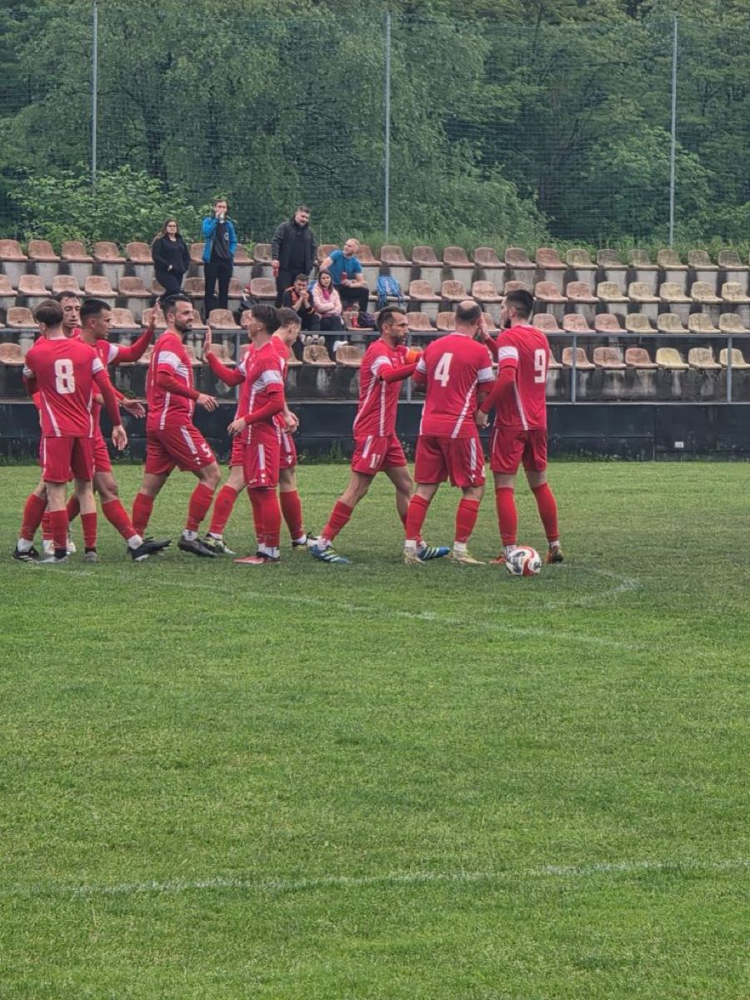
Leto se je začelo s pregledom nazaj. Januarja smo v petih delih objavili zgodovino vlaganj v Športni park Zarica, od garderobnih prostorov leta 2000 do načrtov za naprej. Zapis pove marsikaj, česar drugod ni: da je bilo pomožno igrišče leta 2003 zgrajeno na divjem odlagališču gradbenega materiala, da je bila skoraj vsaka pridobitev delo prostovoljcev in lastnih sredstev, in da park meri več kot dvaindvajset tisoč kvadratnih metrov, za katere klub skrbi sam. Med načrti so veliko igrišče z umetno travo z razsvetljavo, nove garderobe, pokrito večnamensko igrišče in poligon. Odprto ostaja vprašanje, kdo bo park sistemsko vzdrževal.
Februarja se je na priprave v Umag odpravila več kot stotridesetčlanska odprava selekcij od U11 do U19. Vsi so se vrnili zdravi.
Zima je bila uspešna. U15 je pod vodstvom Dejana Robnika osvojila zimsko ligo. »Rezultat, ki ga nihče ni pričakoval,« je zapisal trener. Kadeti so se pod vodstvom Davida Konjarja prebili v finale zimske lige, kjer so izgubili proti Triglavu in osvojili drugo mesto; v polfinalu so po enajstmetrovkah izločili Jesenice. U10 so bili tretji v zimski ligi Baza Ljubljana.
Na trening U15 je prišel Janez Zupančič, trener, ki je člansko moštvo popeljal med drugoligaše.
Pomlad članov je bila nihajoča. Začeli smo z zmago v Britofu z 2:0 in doma s 3:1 premagali Visoko, nato izgubili v Bitnjah, doma s 5:1 odpravili Železnike, izgubili mestni derbi s Savo z 0:3 in v Preddvoru z 0:4. Maja smo doma s 4:2 premagali Polet; Dejan Robnik je z enajstmetrovke dosegel svoj jubilejni stoti zadetek v rdečem dresu in kmalu zatem še enega, za člansko moštvo pa je debitiral kadet Luka Žeželj.
Kadeti so maja doma s 4:2 nadigrali gorenjske prvake iz Stražišča. Erazem Bogataj je tri zadetke dosegel v razmaku osemnajstih minut. Ekipa se je povzpela na drugo mesto.
Februarja smo izvedli trenersko delavnico; v klubu deluje šestnajst trenerjev s pomočniki. Maja je selekcija U15 na povabilo NZS trenirala v Nacionalnem nogometnem centru na Brdu v sklopu trenerskega usposabljanja UEFA.
Junija smo sprejeli razvojno usmeritev: ob urejenem programu za selekcije od U9 do U15 bomo nogometaše od U15 naprej, ki jim naše okolje ne bo dovolj velik izziv, sami usmerjali v večje sredine na višjem nivoju.
V četrtek, 18. junija, je bil volilni občni zbor. Za predsednika so člani soglasno, brez protikandidata, izvolili Mira Vodana. Po sedmih letih se na čelo kluba vrača nekdanji prvoligaški vratar, ki je klub vodil že od leta 2002 do 2019. Izvoljen je bil razširjeni izvršni odbor, ki bo štel devet članov.
Stojan Humar je prejel naziv častnega člana. Gre za prvo tovrstno priznanje v zgodovini kluba. Klubu je predan vse od ustanovitve, še danes pa deluje kot trener v osnovnošolskih nogometnih krožkih.
Člani so sprejeli tudi odločitev o spremembi imena. Dosedanji NK Zarica Kranj odslej deluje pod imenom NK Zarica Kranj. S tem klub poudarja svojo identiteto, tradicijo in povezanost z lokalnim okoljem.
2025
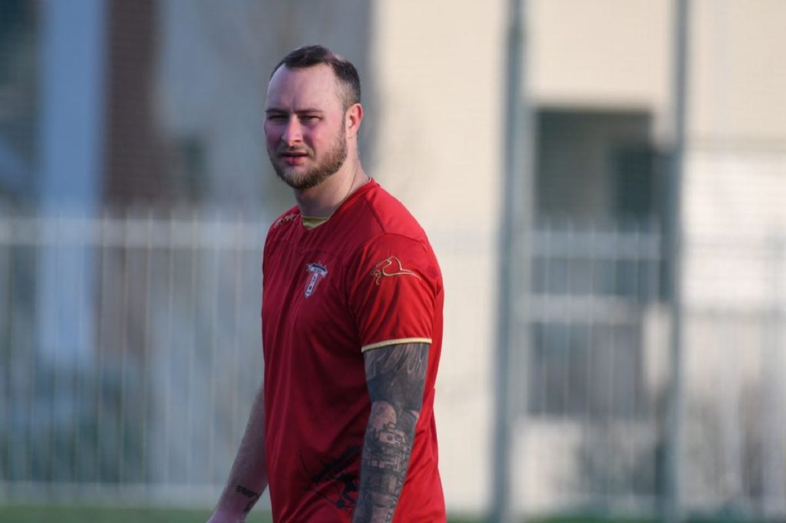
Vrnitev med tretjeligaše je trajala eno sezono. Februarja je člansko moštvo prevzel Milan Gogić, pomlad pa se je začela s porazom proti Adrii iz Mirna; na tej tekmi se je huje poškodoval vezist Benjamin Samardžić in sezona je bila zanj končana. Konec aprila, štiri kroge pred koncem, je bil izpad iz 3. SNL potrjen.
Miro Vodan takrat ni iskal olepšav. Kritiziral je pomanjkanje značaja, odnosa in odgovornosti igralcev ter napovedal, da bo treba znova postaviti temelje.
V gorenjsko ligo smo se vrnili z mladimi. Jesenski del je vodil David Ušlakar in priložnost je dobilo veliko mladih. Sezono smo odprli z zmagama proti Britofu in na Visokem, sledila sta poraz z Bitnjami in remi v Železnikih. Mestni derbi s Savo smo doma dobili s 3:2, oba zadetka je dosegel Dejan Robnik, prvenec pa je zadel David Gorgiev. V Kranjski Gori smo zmagali s 7:2 s tremi goli Blaža Šujice. Mladinske selekcije so bile rezultatsko v samem vrhu tekmovanj: mladinci so jeseni nanizali pet zaporednih zmag in vodili na lestvici, kadeti so bili drugi.
Septembra je Dejan Robnik po šestindvajsetih letih članskega nogometa napovedal slovo od aktivnega igranja.
Prvo klubsko trenersko delavnico smo izvedli maja, pod vodstvom Dejana Robnika in v sklopu razvojnega programa NZS.
Junija je bil v ŠP Zarica festival nogometa in zabave, ki ga je pripravil HOFER skupaj z Zavodom ŠIRC. Zbralo se je okoli tristo nogometašev U9 iz petnajstih klubov.
Septembra smo obeležili deset let od zgodovinskega mestnega derbija s Triglavom v ŠP Zarica, ki si ga je ogledalo več kot tisoč gledalcev.
V športnem parku smo namestili avtomatski defibrilator, dostopen vsem obiskovalcem. Obnovili smo tudi pot na Kokolovem klancu, ki povezuje Orehek in Drulovko s parkom; urejena je bila pred približno petdesetimi leti, nato pa se je zarasla.
Decembra je bil Dejan Robnik na turnirju v organizaciji NK Velesovo fizično napaden in mu je bilo grozeno. Dogodek smo prijavili policiji, grožnje pa so se po njenem odhodu ponovile. Klub deluje v okviru kampanje NZS Spoštuj.
2024
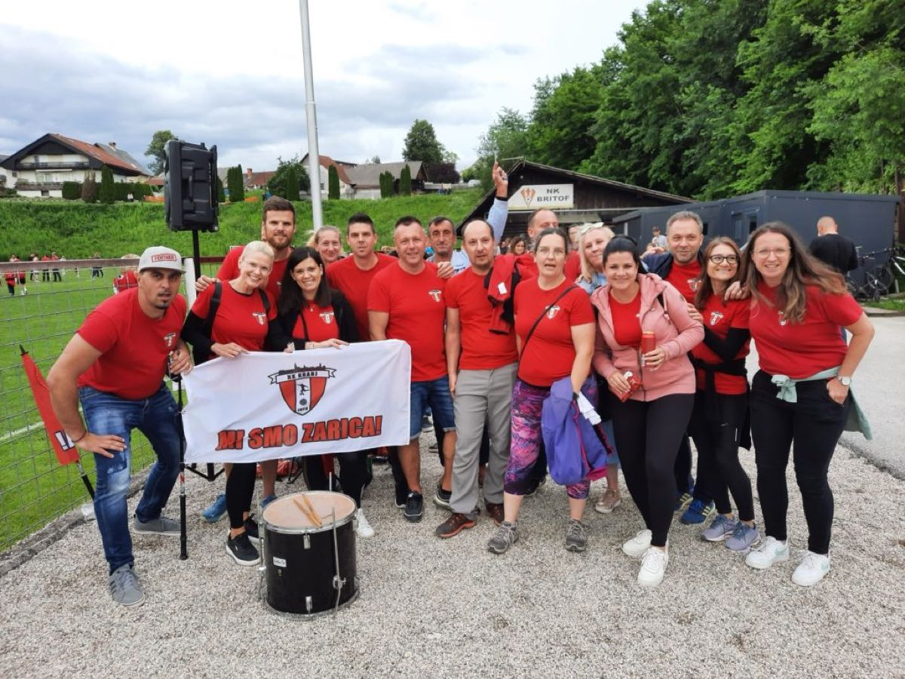
Leto naslova in petdesetletnice.
Spomladanski del sezone 2023/24 smo odprli s 5:0 proti Naklem in ga peljali brez resnega odpora. Vratar Igor Đurić je ohranjal nedotaknjeno mrežo štiristotri minute. Aprila smo doma s 6:1 odpravili Bitnje, sledil pa je edini poraz sezone, v Velesovem z 1:2.
Maja je Dejan Robnik doma proti Kranjski Gori dosegel vse štiri zadetke. Derbi prvenstva z Bledom smo dobili s 4:2 pred lepim številom gledalcev in polnimi parkirišči. V sredo, dva kroga pred koncem, smo v Stražišču s 3:2 premagali Savo in postali prvaki MNZG.
Sezono smo sklenili z zmago v Britofu, osemnajsto v prvenstvu, naslov pa osvojili s sedmimi točkami naskoka.
Konec maja je izvršni odbor NZS sprejel način izpadanja in popolnjevanja članskih lig, po katerem smo bili brez dodatnih kvalifikacij neposredno uvrščeni v 3. SNL. Po šestih letih smo se vrnili pod okrilje NZS.
Naslov je bil peti v petdesetletni zgodovini kluba. Pred njim smo bili prvaki v sezoni 1976/77 v drugi gorenjski ligi, 1983/84 v drugi občinski ligi, 2006/07 v 1. GNL in 2014/15 na vrhu 3. SNL.
Junija smo praznovali petdeset let. Na slavnostni skupščini je govoril soustanovitelj Stojan Humar in se vrnil v začetek sedemdesetih let, ko se je porodila zamisel o ustanovitvi kluba. Podelili smo priznanja za vdanost in delo: Darku Savšku in Zoranu Zeliću za štirideset let, Milanu Poršu in Robertu Vodanu za petinštirideset, Stojanu Humarju za petdeset. Med gosti so bili nekdanja predsednika Borut Gros in Zvone Koželj, predsednik MNZG Mihael Zrimec, član sveta KS Orehek Drulovka Blaž Jarc in dolgoletni trener rdečih Tomaž Žukevič. Osmega junija je sledil dan nogometa in zabave v ŠP Zarica.
Vrnitev v 3. SNL je bila težka. Moštvo je avgusta prevzel Brane Pavlin, ki je rdeče vodil že v 2. SNL. Po dveh uvodnih porazih smo v tretjem krogu doma z 2:1 premagali Izolo, ki je bila dotlej vodilna, sredi septembra pa s 3:0 še Rudar Trbovlje. Sledili so porazi. Novembra smo se s Pavlinom sporazumno razšli in za glavnega trenerja imenovali Milana Gogića.
Starši ekipe U14 so septembra samoiniciativno obnovili dotrajani tribuni. »Vaše delo ni le estetsko izboljšalo naš stadion, temveč predstavlja pomemben zgled sodelovanja in pripadnosti klubu,« se jim je zahvalila uprava.
Decembra je Robert Vodan, dolgoletni delavec kluba in član izvršnega odbora, na slavnostni akademiji Mestne občine Kranj prejel občinsko nagrado za pogumno dejanje ob osamosvajanju Slovenije.
2023
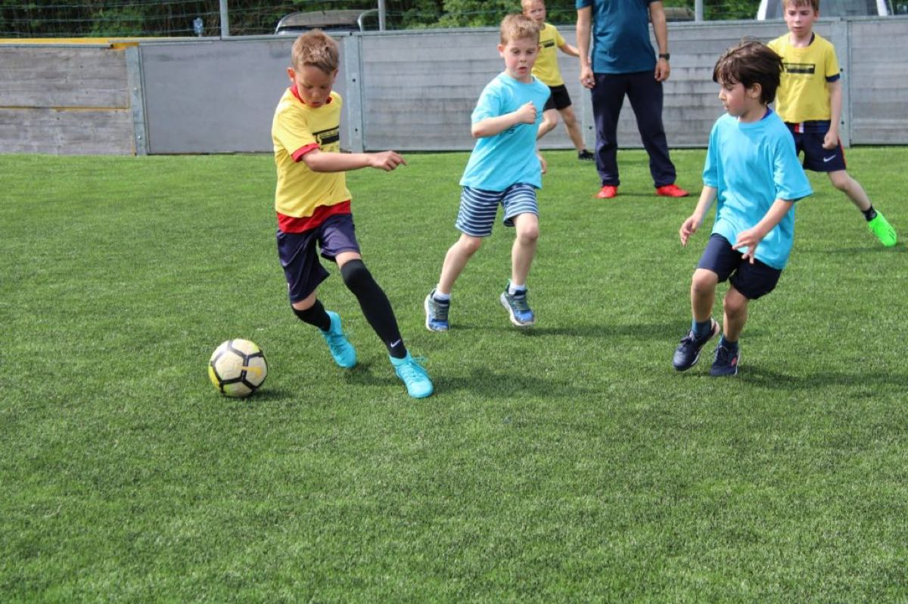
Jesen sezone 2023/24 je bila najboljša po vrnitvi v gorenjsko ligo. Sezono smo odprli s pokalno zmago v Velesovem s 6:2 in prvim krogom doma proti Naklem z 8:0. Sledili so remi v Železnikih, doma Polet z 9:2, v Bitnjah 4:0, doma Velesovo 4:2, v Kranjski Gori 3:2, doma Visoko 3:1 in v Bohinju 4:2 s hat-trickom Blaža Šujice. Oktobra smo doma z 2:0 premagali Savo; na zmago nad njimi v ŠP Zarica smo čakali skoraj petnajst let. Krog pred koncem smo si zagotovili naslov jesenskega prvaka, novembra pa jesen sklenili brez poraza: osem zmag, dva remija, razlika v zadetkih 39:11 in šest točk naskoka. Blaž Šujica je bil najboljši strelec lige. Moštvo je vodil Igor Stojanov.
»Glede na to, da smo jesenski prvaki, smo z opravljenim delom na polovici poti zelo zadovoljni,« je za Gorenjski glas povedal predsednik Refik Islamović. Cilj kluba je bil uvrstitev v višji rang pod okriljem NZS.
Junija so nas obiskali predstavniki UEFA in NZS. Na ogled treninga Otroške nogometne šole so prišli Helen Croft, mentorica za področje Grassroots iz Walesa, Harris Kyrillou iz UEFE, ter Rajko Korent in Daniel Videtič z NZS. Za ogled je NZS izbrala prav našo šolo.
Otroška nogometna šola Zarica je tekla sedemnajsto leto zapored. Obiskovalo jo je enaintrideset otrok, izvedli smo enajst treningov. Vodja šole je Stojan Humar.
Na Dan nogometa Zarica se je zbralo več kot tristopetdeset udeležencev. Vrh dneva sta bili tekmi mladih nogometašev proti staršem in staršev proti ekipi trenerjev.
Avgusta je bil Dejan Robnik izbran v strateški projekt NZS za sofinanciranje trenerjev mlajših ekip. Izbranih je bilo deset trenerjev v vsej Sloveniji. S sezono smo vpeljali nogometni učni načrt.
Junija je Rado Kepic po petih letih in pol predal generacijo letnika 2010, ki jo je vodil od prvega treninga leta 2018. Ekipo je prevzel Dejan Robnik, Kepic pa U9.
2022
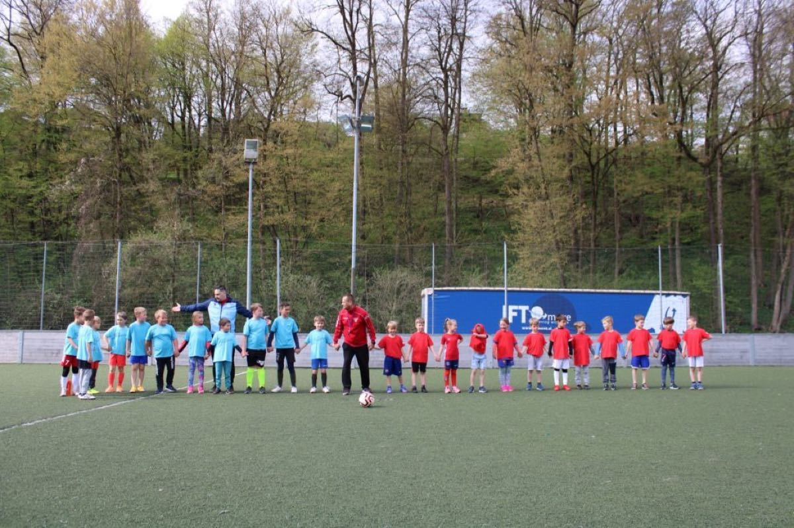
Izvršni odbor je za 14. junij sklical redno volilno skupščino. Predsednik kluba je bil Refik Islamović.
Sezono 2021/22 v ligi MNZG smo v zaključku igrali dobro. Po treh zaporednih zmagah, zadnji doma proti Bohinj-Bledu s 3:2, smo bili tri kroge pred koncem tretji.
Pred sezono 2022/23 je člansko moštvo prevzel Igor Stojanov. Njegova prva domača tekma, visoka zmaga nad Velesovim, je bila v neposrednem televizijskem prenosu; Dejan Robnik je dosegel hat-trick. Zmagam nad Kranjsko Goro, ekipo iz Godešiča in Britofom je sledil naslov objave, ki je povzel uvod v sezono: rdeči brez prask tudi po petem krogu.
Otroško nogometno šolo je obiskovalo osemintrideset otrok, izvedli smo dvanajst treningov. Ob zaključku nas je obiskal Siniša Anđelković, ki je do šestnajstega leta igral pri nas, nato pa prek Triglava in Maribora prišel do italijanske Serie A in slovenske reprezentance. Priznanja je podelil ob prisotnosti predsednika.
Na tradicionalno revijo otrok iz nogometnih krožkov je prišlo več kot štirideset najmlajših. Glavni organizator je bil Stojan Humar.
Na priprave v Umag se je odpravilo dvainštirideset udeležencev iz selekcij U12, U13 in U15; priprave je organiziral trener Matjaž Zagmajster.
2021
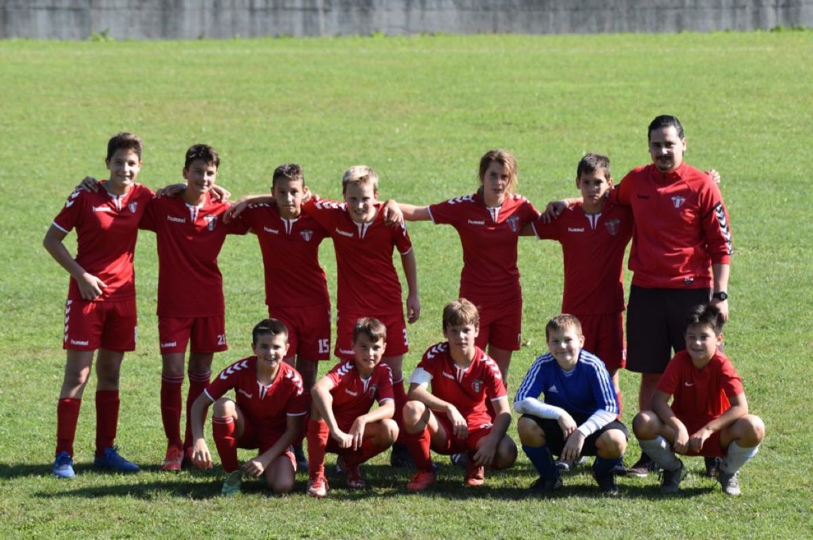
Nogomet se je vračal počasi in ne v celoti. Selekcije so se na igrišča vrnile februarja, najprej z omejenimi treningi. »Lahko treniramo, ne smemo igrati,« je marca zapisal klub: v najnižjih ligah se tekme niso izvajale, kontakt na treningu ali tekmi je bil nedovoljen. Aprila se je država znova zaprla. Posledice so se poznale vso leto; pri U13 je klub jeseni zapisal, da je daljši premor pustil pomanjkljivosti v uigranosti.
Aprila smo za U13, U15 in U17 organizirali priprave v Termah Čatež. Ob fotografiji s priprav je klub pripisal: »Tudi nogometaši spoštujemo ukrepe.«
Jesen je prinesla tekme in nove težave. Karantene so redčile ekipe, U9 so zaradi ukrepov lahko trenirali le v telovadnici tiste šole, ki so jo obiskovali, zato se je ekipa delila med OŠ Orehek in OŠ Staneta Žagarja. Starši na tekmah niso smeli biti prisotni; na zimski ligi je ena od mam srečanje snemala, da so ga drugi spremljali v živo. Pri U8 se je na eni od tekem zbralo šest igralcev, kar je za sistem šest plus ena premalo.
Uvodno tekmo sezone 2021/22 smo doma dobili brez prejetega zadetka. Zadel je Dejan Robnik, njegov štirideseti gol v rdečem dresu, ter komaj sedemnajstletni Žiga Uršič Nagode na svoji prvi članski tekmi. Septembra smo doma s 3:0 premagali Železnike; bila je to naša trinajsta domača prvenstvena tekma proti njim in deveta zmaga. Novembra smo z zmago v Bitnjah, kjer je oba gola dosegel Robnik, jesenski del končali na četrtem mestu, ki smo si ga delili z Britofom.
Ob svoji stoti tekmi za Zarico je bil Robnik oster do članske ekipe: njihova motivacija in želja sta bili po njegovi oceni premalokrat izraženi na igrišču, rezultati pod nivojem kluba. Zahvalil se je Miru Vodanu in Janezu Zupančiču, ki ga je imenoval svojega nogometnega očeta.
Avgusta sta v žensko kadetsko reprezentanco prišli Nika Bohinc in Kristina Grujić. Obe sta od osmega leta trenirali pri nas, obe je vodil trener Matjaž Zagmajster, ki je treniral tudi Bojana Jokića.
Decembra je Robnik v treninge vpeljal šolo. Na določenih treningih so se z nogometaši usedli in ponovili tekočo snov.
2020
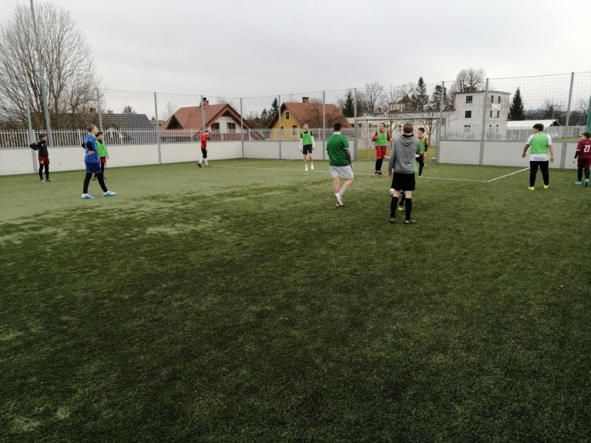
Leto je zaznamovala epidemija. V četrtek, 12. marca, je klub izdal odlok o prenehanju vseh aktivnosti v ŠP Zarica. Prekinitev je nastopila takoj po vrnitvi s priprav iz Umaga, kamor so se konec februarja odpravile selekcije U11, U13, U15 in U17. »V ŠP Zarica tokrat igrišča ostajajo prazna,« je zapisal trener Dejan Robnik. Sezona pod okriljem MNZG se je predčasno končala, brez uvrstitev.
Delo se je preselilo na daljavo. Robnik je članom in mladincem pošiljal tekaške in intervalne treninge po elektronski pošti, Milan Gogić vadbo za moč in stabilizacijo telesa, David Konjar treninge za U13. Matjaž Zagmajster je uvedel tedenske izzive s točkami, ki so se upoštevale na prvem treningu. »Danes bi se moralo pričeti prvenstvo,« je zapisal ob koncu marca. Treningi so se morali opravljati samostojno, ne v skupini.
Med zaprtjem je klubska stran zaživela drugače. Nastale so rubrika »Ostanimo skupaj, ostanimo povezani« s pismi in fotografijami otrok ter staršev, predstavitve igralcev in trenerjev in serija »Zarica skozi čas« v štiriindvajsetih delih. Gradivo zanjo je več let zbiral klubski delavec Robert Vodan iz arhivov Gorenjskega glasa in Ekipe; NZS o klubu arhiva nima, MNZG hrani podatke od leta 1995 dalje.
Poleti se je moštvo obnovilo z vrnitvami. Vrnili so se Blaž Šujica, Dejan Božičič, Darko Babič, Matej Pirc, Dragan Jurić, Darjan Curanović in Aljoša Kopitar, septembra še David Bunderla. Šujica je bil tedaj z triinšestdesetimi zadetki drugi strelec kluba vseh časov, za Jakom Zaletelom.
V sezono 2020/21 smo vstopili z devetimi ekipami. Prvenstvo 1. MNZG je štelo trinajst ekip in triindvajset krogov. Po uvodnem porazu v Britofu smo doma premagali Bitnje z 2:1, v Bohinju zmagali z 1:0 z golom Sankovića v triindevetdeseti minuti, doma razbili Naklo s 7:1 in Kranjsko Goro z 8:0. Šujica je v šestih krogih dosegel osem zadetkov in dva zaporedna hat-tricka. Vmes smo v Preddvoru pri zadnjeuvrščeni ekipi brez točk izgubili z 0:5. V pokalu MNZG smo po zmagah nad Bitnjami in v Lescah prišli do polfinala. Sredi oktobra se je poročanje o tekmah končalo.
Otroško nogometno šolo je junija zaključilo devetindvajset učencev prvih razredov. Zaradi zaprtja šol sredi marca smo začeli šele v drugi polovici maja in izvedli deset treningov. Bojan Jokić tokrat ni mogel priti. V klubu je delovalo osem trenerjev.
Avgusta smo se javno uprli novačenju mladih igralcev in navedli, da smo od julija 2019 ostali brez štiriintridesetih mladih igralcev, večinoma od U15 do mladincev. Novembra je sledila serija petih objav o sporu z MNZG glede registracij, pritožbe brez odgovora in neskladja med zapisniki disciplinskega sodnika.
Decembra je klub sporočil veselo novico. Jaka Burger iz ekipe U9, ki je zaradi težke bolezni skoraj leto dni manjkal, je uspešno prestal presaditev.
2019
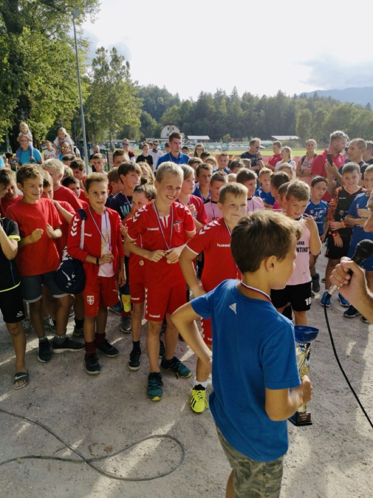
Aprila je Miro Vodan po štirih mandatih in šestnajstih letih sporočil, da ne kandidira več ne za predsednika ne za druge organe kluba. Redna volilna skupščina je bila sklicana za 25. april.
Ob odhodu je potegnil črto. Ko je klub prevzel, je imel park eno samo igrišče v slabem stanju. Odtlej so bili zgrajeni novo nogometno igrišče, tribune, garderobe, dve malonogometni igrišči z umetno travo, pomožni objekt za druženje, namakalni sistem na obeh igriščih in razsvetljava na pomožnem igrišču. Park meri več kot dvaindvajset tisoč kvadratnih metrov in ima drugo največjo ponudbo športno rekreativnih dejavnosti v Kranju.
Med neuspehi je navedel dvoje. Klub kljub dolgoletnim naporom ni prišel v sistem vzdrževanja športnih površin prek Zavoda za šport; od Mestne občine Kranj je prejemal šeststo evrov na mesec, kar je zadoščalo za dvomesečne stroške ogrevanja. Drugi je bila obnova glavnega igrišča, ki je bila po klubovi oceni opravljena nezadostno, nepopolno in nestrokovno. Pri izbiri izvajalca klub ni mogel sodelovati. Zadeva je pristala na sodišču. Zaradi neustreznega igrišča nam je NZS omejila možnosti napredovanja.
Člansko moštvo je vodil Dejan Robnik s pomočnikoma Darkom Savškom in Robertom Marušičem. Priprave na pomlad smo opravili v Umagu, pri organizaciji je sodelovalo Društvo paraplegikov Gorenjske.
Kadeti so se borili za naslov. Aprila smo v Visokem zmagali z 8:4, doma s Savo z 2:1, z Jesenicami s 5:1 in v Britofu s 6:0. Po šestnajstem krogu smo bili s tridesetimi točkami drugi, točko za Lescami.
Marca se je v Umag na priprave odpravilo več selekcij, od U13 do kadetov. Za malico so poskrbeli sponzorji Pekarna Mlaka, Pekarna Triler in Tuš trgovina.
Junija je bila v ŠP Zarica zaključna prireditev Otroške nogometne šole Bojana Jokića, ki jo organizirata Stojan Humar in Matjaž Zagmajster. Bojan Jokić je prišel osebno in vsakega nogometaša nagradil z žogo, majico in medaljo. V trinajstih letih šole je na zaključku izostal en sam krat, leta 2010, ko je bil z reprezentanco na svetovnem prvenstvu v Južni Afriki.
Maja je skupina najmlajših obiskala Nacionalni nogometni center na Brdu, si ogledala trening reprezentance in se družila z Janom Oblakom.
2018
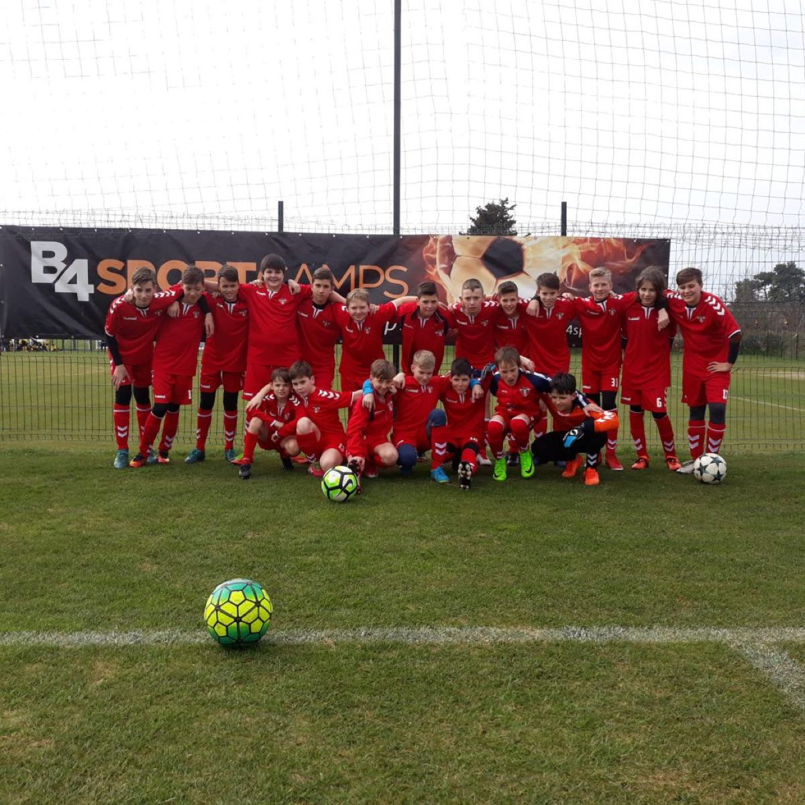
Jesenski del drugoligaške sezone smo pod vodstvom Braneta Pavlina končali na enajstem mestu. Pozimi so se nam pridružili napadalec Gaber Petric, mladi vratar Lazar Miković in izkušeni Marko Kovjenič.
Pomlad je bila težka. Marca smo doma s 3:0 premagali Radomlje, strelci so bili Kopač, Oman in Beganović. Aprila smo v Lendavi izgubili z 0:9; odpotovali smo brez šestih igralcev, po poškodbi Beganovića igrali z desetimi, na klopi pa je kot edini rezervni igralec sedel vratar Anže Hafner. Maja smo doma z 1:0 premagali Dob, zadel je Ahačič. Bila je naša šesta prvenstvena zmaga v sezoni in hkrati štiristopetdeseta prvenstvena zmaga v zgodovini kluba.
V pokalu MNZG smo v četrtfinalu v Šenčurju po rednem delu remizirali z 2:2 in se po streljanju enajstmetrovk uvrstili v polfinale. Odločilni strel je zadel Šalja.
Poleti se je drugoligaška zgodba končala. Z odločitvijo vrha NZS smo bili nepričakovano potisnjeni rang nižje, medtem ko je favorizirani Ankaran ostal v ligi in kmalu zatem sam izstopil iz tekmovanj ter razpustil moštvo. Tedanje vodstvo kluba se je iz protesta odločilo izstopiti iz tekmovanj pod okriljem NZS.
Tako se je sklenilo obdobje, ki mu je botrovalo sedemnajst let v tretji ligi in tri sezone v drugi. Mestna občina Kranj je za drugoligaški nastop prispevala tisoč tristo evrov. Prvenstvo smo zaključili z osmimi igralci. »Tukaj se naša nogometna filozofija končuje,« je zapisal klub. Po enaindvajsetih letih neprekinjenega nastopanja v državnih ligah, če izvzamemo sezono 2006/07, smo moči začeli meriti v tekmovanju MNZG.
Novo obdobje smo začeli s trenerskim tandemom Robnik in Marušič. Dejan Robnik, do tedaj igralec in kapetan, je prevzel klop. V prvem krogu smo na Jesenicah zmagali s 3:0, zadeli so Teran, Jošt in Robnik. Robnik je s svojim osemindvajsetim golom napredoval na deveto mesto večne klubske lestvice strelcev.
Septembra smo javno opozorili na obnovo glavnega igrišča. Izvajalec, podjetje GGD iz Kranja, je delo opravil tako, da se je stanje po obnovi poslabšalo: drenaža ne deluje, travna površina je slaba, igrišče neravno. Ob vsakih manjših padavinah je površina neustrezna za igro.
Mestna občina Kranj je pristopila k legalizaciji objekta, ki smo ga nekaj let prej sami obnovili. Izdano je bilo gradbeno dovoljenje za obnovo in nadgradnjo v dveh fazah. Izvedena je bila prva faza. Druge, ki je predvidevala garderobe v pritličju ter pisarno kluba in sejno sobo v nadstropju, ni bilo. Ob obnovi smo izgubili prostor, ki je služil kot klubska pisarna; v njem odtlej deluje svet krajevne skupnosti.
Pri mlajših selekcijah je trener Milan Gogić vodil interno zimsko ligo Pokal Zarica za U13 in U14. Štiri ekipe so nosile imena Liverpool, Barcelona, Bayern in Juventus.
Aprila se je v ŠP Zarica predstavilo štiriintrideset najmlajših iz štirih šol. Nogometne aktivnosti v šolah je vodil trener Stojan Humar, pomagala sta mu David Ušlakar in Matjaž Zagmajster.
2017
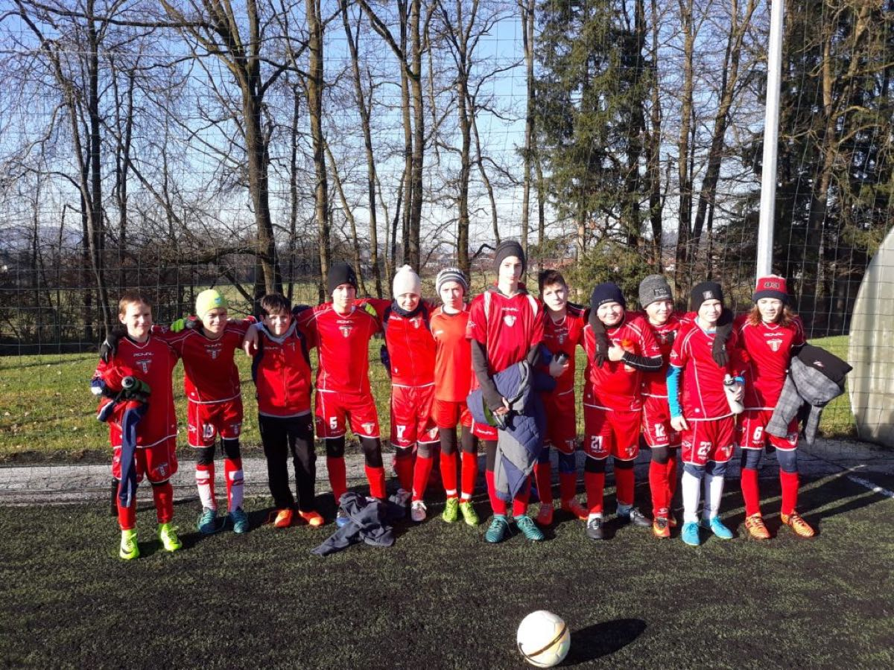
Sezono 2016/17 smo končali na osmem mestu 2. SNL; v petindvajsetih tekmah smo zbrali triindvajset točk. Aprila je člansko moštvo prevzel Robert Marušič, do tedaj trener mladincev. Poleti je Janez Zupančič postal športni direktor kluba.
Konec maja smo v ŠP Zarica gostili finale pokala MNZG proti Triglavu, ki se je tisto pomlad uvrstil med prvoligaše.
Avgusta smo začeli tretjo zaporedno drugoligaško sezono, prvi krog doma z Dravo. V pokalu Slovenije smo gostovali v Murski Soboti pri Muri.
Ob teniških igriščih smo z lastnimi sredstvi zgradili drugo igrišče z umetno travo. Postavljeno je bilo na zapuščen prostor in je odtlej ključno za termine najmlajših selekcij.
Istega leta je bila prekinjena podpora iz proračuna Mestne občine Kranj za vzdrževanje zelenih površin, ki je tekla neprekinjeno od leta 2005. Prekinitev je trajala šest let, po klubovih navedbah brez pojasnila.
Decembra smo v telovadnici OŠ Franceta Prešerna pripravili drugo srečanje otrok prvih razredov iz kranjskih osnovnih šol, ki obiskujejo nogometne krožke. Ekipe smo sestavljali sproti, golov nismo šteli, lestvic nismo delali in najboljšega igralca nismo izbirali. Krožke smo v dogovoru z drugimi klubi in MNZ Kranj vodili na OŠ Orehek, OŠ Staneta Žagarja ter podružničnih šolah v Mavčičah in Besnici.
2016
Sezono 2015/16 smo v 2. SNL končali na sedmem mestu. Iz sedemindvajsetih tekem smo zbrali enaintrideset točk ob razliki v zadetkih 27:46. Med sezono je moštvo začasno vodil Robert Marušič in z njim smo nanizali dobro serijo rezultatov.
Leto po obnovi glavnega igrišča smo postavili montažno VIP tribuno. Železo zanjo je bilo sofinancirano prek krajevne skupnosti in Mestne občine Kranj.
2015
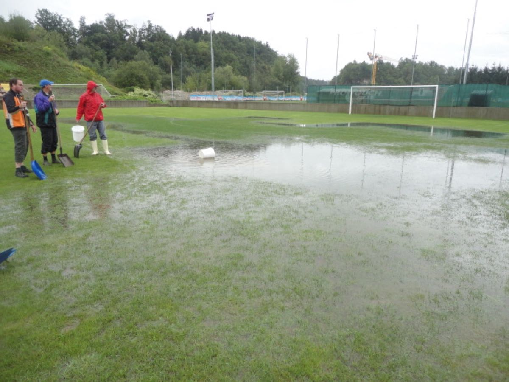
Leto, o katerem je predsednik Miro Vodan zapisal, da bo v zgodovino kluba vpisano z velikimi črkami. Člansko moštvo je osvojilo prvenstvo 3. SNL in se prek kvalifikacij, v izjemnem vzdušju domačega športnega parka, uvrstilo v 2. slovensko nogometno ligo. Poleti je licenčna komisija pregledala ŠP Zarica in za drugoligaški nastop prižgala zeleno luč.
Maja smo v finalu pokala MNZG priznali premoč Triglavu z 1:3, odločil je Matej Poplatnik. V pokal NZS sta se uvrstili obe moštvi.
Drugoligaški prvenec je bil mestni derbi s Triglavom pred več kot tisoč gledalci. Na prvo zmago smo čakali do četrtega kroga, ko smo slavili v Veržeju. Sredi oktobra smo bili na tretjem mestu, nato je sledila serija porazov in jesen smo končali osmi s sedemnajstimi točkami.
Trenersko je bilo leto nemirno. Janeza Zupančiča, ki je klub v dveh obdobjih vodil skupno okoli pet let in pustil velik pečat, je 20. septembra zamenjal Matjaž Florjančič; pod njim smo zbrali tri zaporedne zmage in remizirali z mestnim rivalom. Ob koncu decembra se je po štirih letih in pol na klop vrnil Brane Pavlin.
Oktobra se je začela obnova glavnega igrišča, ki je slabo prepuščalo vodo. Klub je obnova izjemno finančno obremenila. Moštvo se je preselilo na mestni stadion in tam ni osvojilo niti ene točke.
2014
Tudi leto 2014 je zaznamovano z vlaganjem v infrastrukturo. Klub je nadaljeval s posodobitvijo ŠP Zarica. Lično izdelan oOporni zid ob glavnem igrišču je bil dokončno sklenjen v zaokroženo celoto. Izvedena je bila popolna sanacija pomožnega igrišča.
Junij je bil eden izmed najbolj aktivnih mesecev. Na redni programsko volilni skupščini kluba so člani zaupali nov mandat za vodenje kluba Miru Vodanu. V IO so bili poleg predednika izvoljeni Milan Porš, Stojan Humar, Robert Vodan, Darko Klinc, Žiga Porš in Mirko Draksler.
Zgodil se je dan nogometa s klubsko veselico, 28.06. smo praznovali 40 let delovanja. ob tej priložnosti smo gostili Bosanskega prvoligaša Borac iz Banje Luke. Pri članih smo zbeležili največji uspeh, saj je bilo moštvo drugo, ob tem pa so se uvrstili v finale gorenjskega pokala, kjer so prmoč priznali Šenčurju.
Jeseni so z zmago v Odrancih za nagrado dobili Celje. Klub je dočakal tudi uradno himno,
2013
Po desetih zaporednih gostovanjih smo se 21. aprila 2013 vrnili na Zarico; maja smo zaradi izjemnega vremena dve »domači« tekmi odigrali še na umetni travi ŠC Kranj in 25. maja proti Calcitu iz Kamnika dosegli prvo »domačo« zmago sezone. Najlepši rezultat pomladi je bila zmaga 2:0 pri vodilnem AH Mas Techu v Kopru 24. marca. Sezono 2012/13 smo končali na enajstem mestu med trinajstimi in obdržali tretjeligaški status; naš najboljši strelec je bil z devetimi goli Blaž Šujica, čeprav je igral le spomladi.
Zvezde leta so bili mladinci trenerja Igorja Jeriča: 16. junija 2013 so s 5:1 v gosteh pri Naklem potrdili naslov gorenjskih prvakov pred občinstvom, ki ne bi osramotilo prve lige, Stojan Ilić pa je bil prvi strelec lige. Po klubskem zapisu so v pokalu prav mladinci v četrtfinalu izločili prvoligaški Triglav in nato v polfinalu priznali premoč Šenčurju, medtem ko smo člani izpadli že v drugem krogu pri Britofu. Junija je bilo po klubskem zapisu v našem parku tudi evropsko prvenstvo logističnih izpostav podjetja DSV z več kot 500 udeleženci.
Poleti smo se lotili največjega gradbenega zalogaja: obnove glavnega igrišča. Travo je polagalo podjetje Gregorc in jo zaradi hude vročine dokončalo šele 17. avgusta 2013; otvoritveno tekmo z Zagorjem 25. avgusta smo morali zaradi poplavljenega igrišča odpovedati in jo odigrali 4. septembra. Prenovljena zelenica je prinesla srečo: 22. septembra smo zmagali pri vodilnem Tolminu, doma s 3:1 odpravili Adrio in jesen sklenili v samem vrhu, kar je napovedalo drugo mesto v sezoni 2013/14.
2012
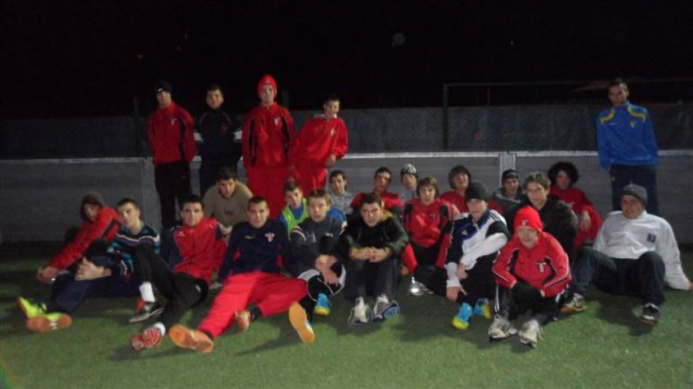
Pozimi smo med navijači izvedli javno anketo o tekmovalnem imenu (Kranj, Zarica ali Zarica Kranj) in od pomladi 2012 so naše ekipe na lestvicah vodene kot Zarica Kranj; 31. januarja 2012 smo ob tem objavili zapis o soteski Zarici pod Kranjem, kot jo je opisal Rudolf Badjura. Mlada ekipa je pomladi vrnila zaupanje: ključno zmago za obstanek smo 21. aprila dosegli pri Ilirski Bistrici in sezono po klubskem zapisu končali na devetem mestu, Matej Poplatnik pa je bil s 17 goli drugi strelec lige. V pokalu smo se po klubskem zapisu člani in mladinci prebili do polfinala, kjer so nas obakrat izločile Jesenice.
Največja pridobitev leta je bil sprejeti mladinski program, veljaven do leta 2016, ki smo ga javnosti predstavili v seriji zapisov Vizija kluba od 3. decembra 2012. Septembra smo nogometno šolo prvič odprli tudi za deklice od šestega leta; klub je takrat štel okoli 200 igralcev in dvanajst trenerjev. V sezoni 2011/12 so starejši dečki, kadeti in mladinci nastopali v skupnih ekipah s Savo, a sodelovanje po klubski oceni ni prineslo želenih rezultatov.
Jesen je bila trnova. Po domači tekmi 13. oktobra 2012 je glavno igrišče postalo neuporabno in začelo se je dolgo obdobje gostovanj; 24. novembra smo »domačo« tekmo z Zagorjem odigrali v Stražišču pri mestnem tekmecu Savi in izgubili z 0:1. 22. oktobra je upravni odbor Marka Trebca zamenjal z Janezom Zupančičem, ki je člane vodil že v letih 2006 do 2009. V parku smo zgradili še oporni zid med glavnim in pomožnim igriščem, prvi korak k igrišču z umetno travo.
2011
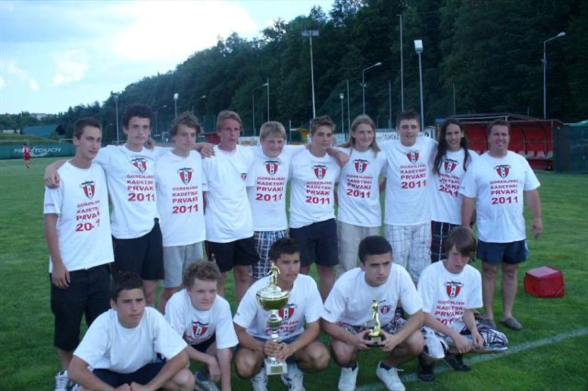
22. februarja 2011 smo doživeli enega najlepših dni v klubski zgodovini: na stadionu Friuli v Vidmu smo se pomerili z Udinesejem, takrat petim moštvom Serie A. Izgubili smo le z 1:2, oba gola za domače je dal Cuadrado, naš častni zadetek pa Enes Đurković, medtem ko je Ajdovec zatresel še okvir vrat. Pomlad smo nato prebili v lovu na drugo mesto in sezono 2010/11 končali na petem mestu s 46 točkami, kar je klub opisal kot svojo najboljšo tretjeligaško sezono. V ponos so nam bili tudi kadeti: 29. maja so z remijem proti Šobcu iz Lesc potrdili naslov gorenjskih prvakov, Stojan Ilić je bil prvi strelec lige.
Na programsko-volilni skupščini 23. junija 2011 je bil Miro Vodan znova izvoljen za predsednika. Le teden pozneje pa se je ekipa razletela: trener Brane Pavlin je odšel k drugoligašu v Šenčur in po klubskem zapisu je z njim odšlo sedem nosilcev članske ekipe. 6. julija 2011 je vodenje prevzel Ivo Levstek in skoraj čez noč smo morali sestaviti povsem novo, najmlajšo ekipo lige. Začetek je bil trd, Levstka je že po treh krogih zamenjal Marko Trebec in jesen smo končali na dvanajstem mestu s 13 točkami.
V parku smo medtem zgradili oporni zid na severni strani glavnega igrišča in obnovili interventno pot.
2010
Sezono 2009/10 smo v 3. SNL zahod sklenili na petem mestu z 42 točkami, v četrtfinalu gorenjskega pokala pa nas je z 2:0 izločil Triglav, ki je pozneje pokal tudi osvojil. Istega leta smo se pridružili projektu Rožle, vadbi za najmlajše v okviru kranjskih osnovnih šol, in v celoti z lastnimi sredstvi prenovili malo igrišče z umetno travo: premaknili smo ga proti pomožnemu igrišču, položili novo umetno travo in ga ogradili.
Poletje je prineslo tekmo za spomin. 5. avgusta 2010 smo v avstrijski Vrbi (Velden) igrali prijateljsko tekmo z bundesligašem VfL Bochum in izgubili z 0:2; zadela sta slovenski reprezentant Zlatko Dedič in Toski, trener Brane Pavlin pa je priložnost dal vsem 21 igralcem. Novo sezono smo 21. avgusta odprli z zmago 2:0 nad Ivančno Gorico, zadela sta Đurković in kapetan Albin Kotnik s prostega strela s 35 metrov. Jesen je bila naša najboljša do takrat: prezimili smo na drugem mestu s 26 točkami in trener Pavlin je novembra javno povedal, da merimo na prvo mesto in drugo ligo.
2009
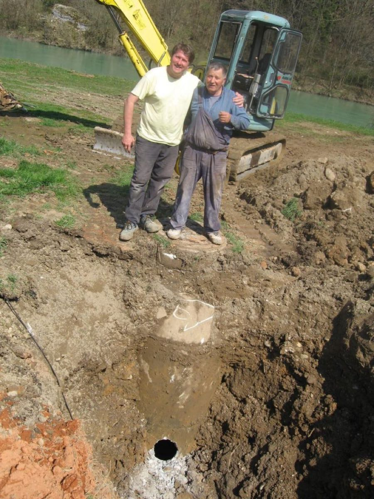
Vrhunec leta je bil 3. junija 2009, ko smo na mestnem stadionu v Kranju igrali finale gorenjskega pokala z drugoligašem Triglavom. Po rednem delu je bilo 1:1, po streljanju enajstmetrovk pa smo izgubili 6:7; Triglavov vratar Marino Marič je ubranil Šmajdov strel. Po klubskem zapisu si je tekmo ogledalo okoli 1000 gledalcev, Triglavov kapetan Rok Dovžan pa je po tekmi priznal: »Nismo pričakovali, da se bodo nasprotniki tako dobro upirali.«
Člani smo pod vodstvom trenerja Janeza Zupančiča sezono 2008/09 končali na šestem mestu z 38 točkami. Pri mladih je bilo leto trše, saj so starejši dečki izpadli iz prve, mladinci in kadeti pa iz druge državne lige. V parku smo v celoti z lastnimi sredstvi izpeljali zahteven priklop na javno kanalizacijo, ob njem zgradili oporni zid s stopnicami do platoja nad igriščem in asfaltirali parkirišče.
2008
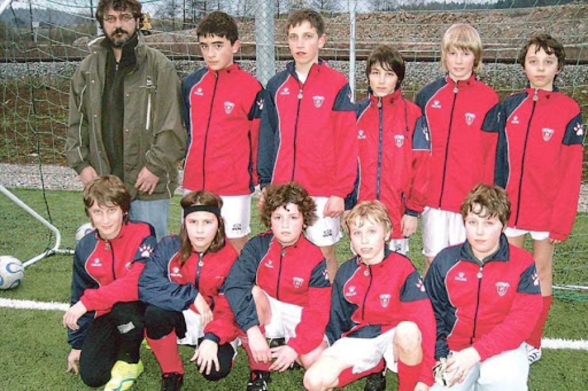
V prvi sezoni po vrnitvi smo v 3. SNL zahod osvojili tretje mesto s 44 točkami, za Olimpijo in Tinex Šenčurjem; sezono smo sklenili 1. junija 2008 z remijem 1:1 v Kortah. Najodmevnejši dosežek leta pa so prispevali starejši dečki, ki so po zmagi nad favorizirano Izolo napredovali v prvo državno ligo.
Spomladi, 23. aprila 2008, smo dobili gradbeno dovoljenje za nov gostinski objekt v športnem parku. Pozimi so blesteli najmlajši: ekipa U-12 se je uvrstila v finale elitne ljubljanske dvoranske lige, generacija 1996 pa je dobila turnir devetnajstih klubov v Celovcu.
2007
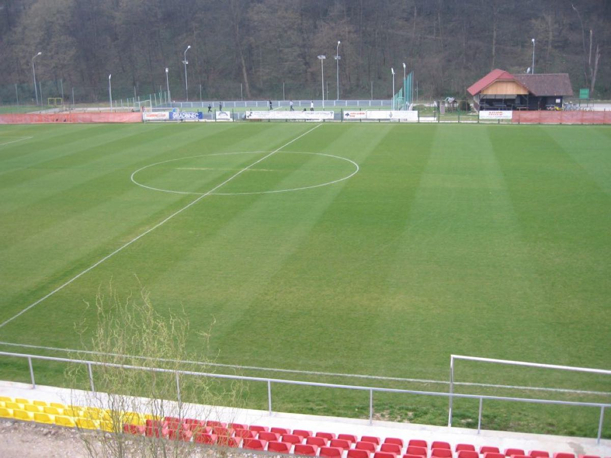
S 5. januarjem 2007 smo sprejeli nova klubska pravila in z njimi novo ime: iz NK Zarica smo postali Nogometni klub Kranj. Navada je bila trdovratna, Gorenjski glas je še marca 2008 pisal »NK Kranj (bivša Zarica)«.
Na igrišču smo leto obrnili v en sam pohod. Prvo gorenjsko ligo 2006/07 smo dobili z 19 zmagami, dvema remijema in enim porazom, z razliko v golih 87:14 in 59 točkami; naslov smo si zagotovili že krog pred koncem in se po enem letu ekspresno vrnili med tretjeligaše. Zavrnjene so bile vse tri pritožbe zoper registracije naših igralcev, Triglavova zaradi vrnitve Tadeja Mikiča ter Šenčurjevi zaradi Bineta Kotnika in Jureta Ajdovca. Istega leta je začela delovati otroška nogometna šola Bojana Jokića.
Jeseni, 7. oktobra 2007, je na Zarico prišla Olimpija Bežigrad s Pavlinom, Cimerotičem, Karićem in Čehom; njen najboljši strelec je bil Davor Bubanja, ki je nogometno pot začel prav pri nas. Izgubili smo 1:2, po klubskem zapisu pa si je tekmo ogledalo kar 1600 gledalcev, največ doslej na našem igrišču.
2006
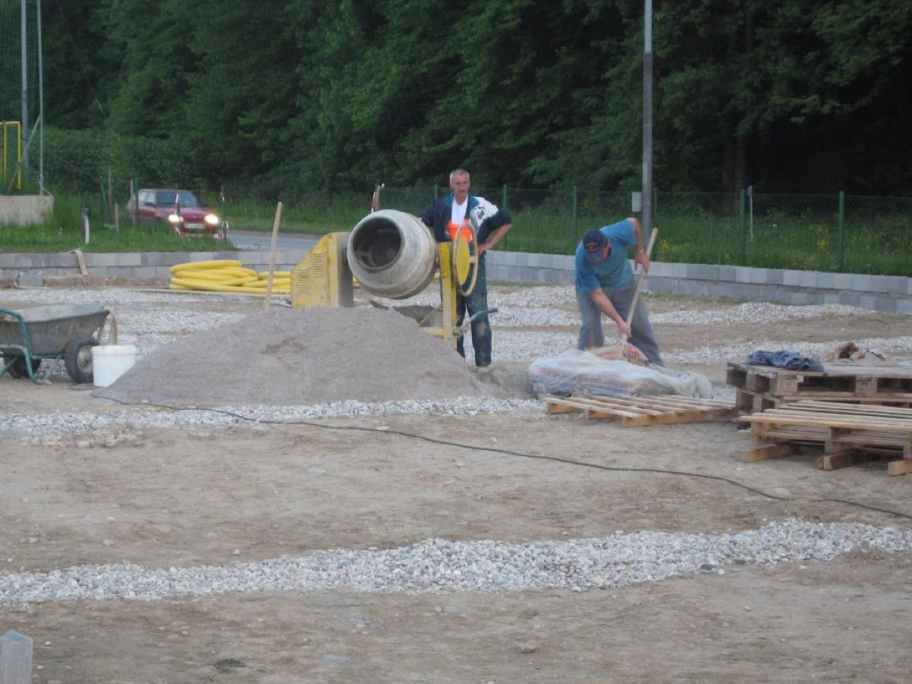
Sezona 2005/06 se je končala grenko. V zadnjem krogu, 10. junija 2006, smo na Bonifiki izgubili z 2:7 in kot trinajsti med štirinajstimi izpadli iz tretje lige, po klubskem zapisu »v čudnih okoliščinah«. A že štiri dni pozneje, 14. junija 2006, smo v Lescah z zmago 4:1 nad domačimi Lescami dobili finale gorenjskega pokala in prvič postali pokalni prvaki Gorenjske, za sezono 2005/06.
Na občnem zboru je bil Miro Vodan znova izvoljen za predsednika. V parku smo zgradili malo igrišče z umetno travo, polovico sredstev je prispevala Fundacija za šport, obnovljeno glavno igrišče pa je bilo spet v polni uporabi. Poleti je bila naša Saška Logar vpoklicana v slovensko žensko kadetsko reprezentanco, jesenski povratek v gorenjsko ligo pa je nakazal, kam merimo: septembra smo v Bohinju zmagali kar s 14:0.
2005
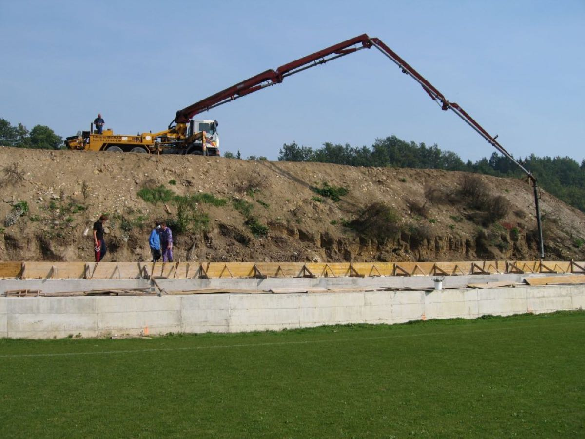
Julija 2005 se je iz Triglavovih mladinskih vrst v matični klub vrnil vratar Darjan Curanovič. ND Triglav se je na registracijo pritožil, a je NZS pritožbo zavrnila. Člani smo v prvi sezoni združene 3. SNL zahod, v katero sta se pred sezono 2004/05 zlili dotedanji skupini center in zahod, končali tik pod vrhom, na tretjem mestu.
V parku smo iz stare lope uredili klubski prostor in začeli graditi glavno tribuno. Konec leta 2005 so stekle še priprave na gradnjo garderob; po klubskem zapisu bi klub brez njih zaradi neustreznih pogojev nazadoval v najnižjo ligo, ne glede na rezultate.
2004
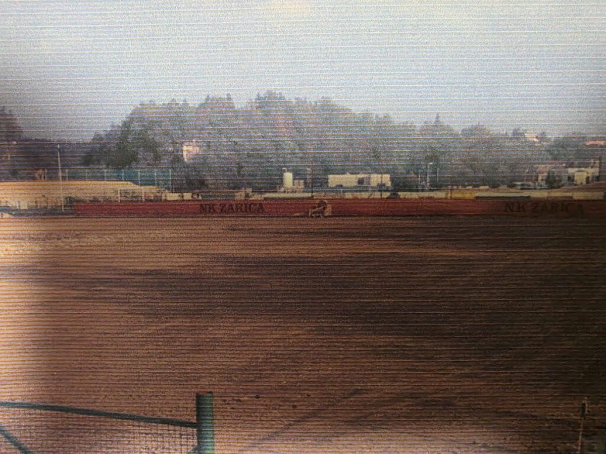
Sezona 2003/04 je prinesla peto mesto, naš najboljši izkupiček do takrat, in 62 doseženih golov; v zgornji peterici lige smo bili kar štirje gorenjski klubi. Jaka Zaletel je postal najboljši strelec cele lige, po klubskem zapisu s 27 goli na 21 tekmah.
Leto 2004 je bilo tudi leto urejanja hiše. 19. marca smo postali zavezanci za DDV, 10. junija nam je ministrstvo podelilo status društva v javnem interesu na področju športa, na občnem zboru 12. junija je bil Miro Vodan znova izvoljen za predsednika, 23. septembra pa smo s Poštno banko Slovenije sklenili kreditno pogodbo za namakalni sistem. Začeli smo obnovo glavnega igrišča, ga opremili z namakanjem ter že vgradili napeljavo in štiri betonske temelje za bodoče reflektorje, vse z lastnimi sredstvi.
2003
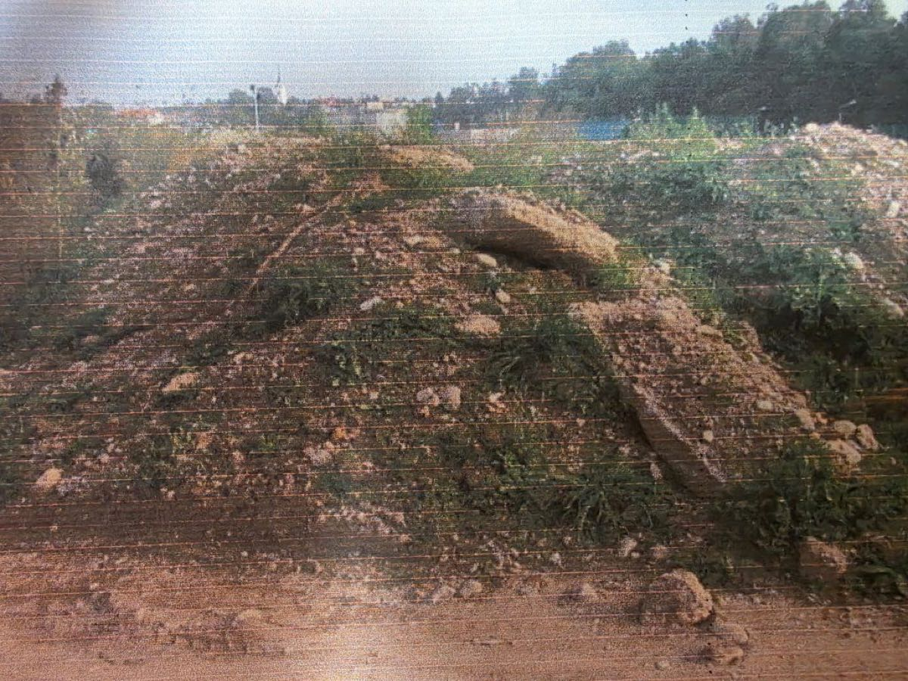
Sezono 2002/03 smo sklenili na šestem mestu, kar je bila do takrat naša najvišja državna uvrstitev; prvi strelec ekipe je bil z osmimi goli Gregor Grašič. Mladinci so postali gorenjski prvaki in se prek kvalifikacij uvrstili v drugo državno ligo.
Za park je bil odločilen 18. april 2003, ko smo od Mestne občine Kranj prejeli najemno pogodbo za degradirano zemljišče nekdanjega črnega odlagališča gradbenega materiala. Na njem smo začeli graditi novo igrišče, današnje pomožno, po klubskem zapisu z izjemnim samoodrekanjem klubskih delavcev ter ob pomoči donatorjev in sponzorjev, po merilih za tekmovanja pod okriljem NZS.
Jeseni 2003 smo prvič nastopali pod sponzorskim imenom Zarica Rondo Nautilus, v moštvu sezone 2003/04 pa je bil po seznamih znova tudi vratar Darjan Curanovič. V pokalu smo oktobra 2003 izpadli po porazu 0:1 v kranjskem derbiju pri Savi.
2002
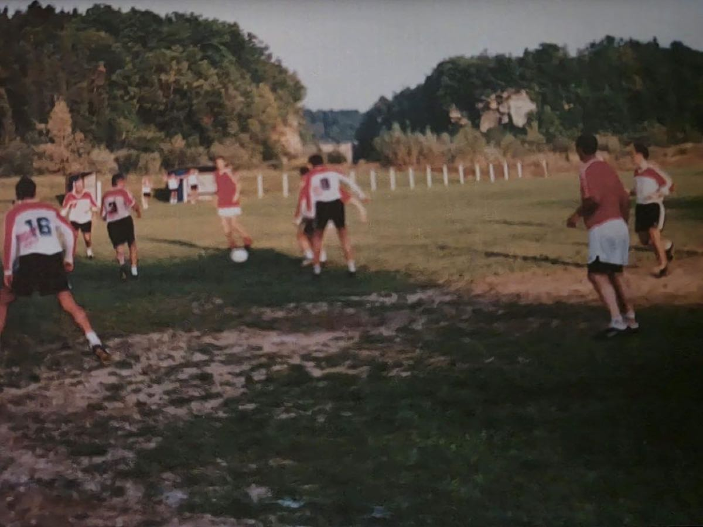
Leto se je začelo z reprezentančno novico: 28. januarja 2002 je bil Bojan Jokić kot edini Gorenjec vpoklican v slovensko reprezentanco do 16 let, in to kot naš igralec; na naslednjem zboru se mu je pridružil še vratar Darjan Curanovič. Da je Jokić »prve nogometne korake naredil pri NK Zarica«, je leto pozneje zapisal tudi Gorenjski glas. Oba sta po klubskem zapisu zaradi pritiska nogometnega razreda šole v Šiški nato prestopila v Triglav.
Na občnem zboru 8. junija 2002 smo za predsednika izvolili Mira Vodana, v izvršnem odboru pa je ostal tudi dotedanji predsednik Andrej Čelik. Ta datum v klubu štejemo za začetek sodobnega razvoja kluba in Športnega parka Zarica; še isto leto je nastal razvojni načrt parka, ki mu z manjšimi spremembami sledimo še danes. Jeseni 2002 je članska ekipa ujela odličen štart in bila po devetih krogih četrta.
2001
Tudi sezono 2000/01 smo končali v spodnji polovici, na enajstem mestu, del domačih tekem pa smo spomladi še vedno igrali na Visokem. Toliko lepši je bil pogled na mlade: mladinci so postali gorenjski prvaki, kadeti tretji. Bolelo pa je, da se je po klubskem zapisu kar trinajst igralcev vhodnega letnika starejših dečkov preselilo v druge klube, pet v Triglav, šest v Britof in dva v Jezero Medvode.
Dela v parku so potekala postopoma vse od konca devetdesetih do leta 2004. Gorenjski glas je 11. septembra 2001 popisal prvo fazo projekta Zarica 2000: obnovljene garderobe in sanitarije, dograjene klubske prostore, ograjeno igrišče in park ob cesti ter obnovljeno glavno igrišče, pomožno igrišče na nekdanji deponiji pa še v gradnji; sponzorji so za obnovo prispevali 16,5 milijona tolarjev. Na prvem občnem zboru obnovljenega Športnega društva Zarica je bil 7. septembra 2001 za predsednika društva izvoljen Zvone Kuželj.
2000
Na občnem zboru 2. februarja 2000 smo spremenili sedež kluba; od takrat je naš naslov Savska Loka 24, isti kot danes. Pomlad na igrišču je bila trda: po klubskem zapisu smo bili z naskokom najslabše moštvo pomladi in šele soliden jesenski del nas je obdržal v ligi, na dvanajstem mestu. Gorenjski glas je 6. junija 2000 sezono pospremil z naslovom »Zarica se je rešila izpada«.
Park je medtem postajal središče kraja. Krajevna skupnost Orehek-Drulovka je 26. avgusta 2000 svoj praznik prvič pripravila v Športnem parku Zarica in izkupiček namenila njegovi obnovi. Po klubskem zapisu je bila istega leta ob odprtju obnovljenih garderob v parku pogostitev z golažem, račun izvajalca del pa je na klubski naslov prišel šele pozneje in presegel ves takratni letni proračun kluba. Ker se je glavno igrišče urejalo, smo domače tretjeligaške tekme jeseni 2000 gostili na Visokem.
1999
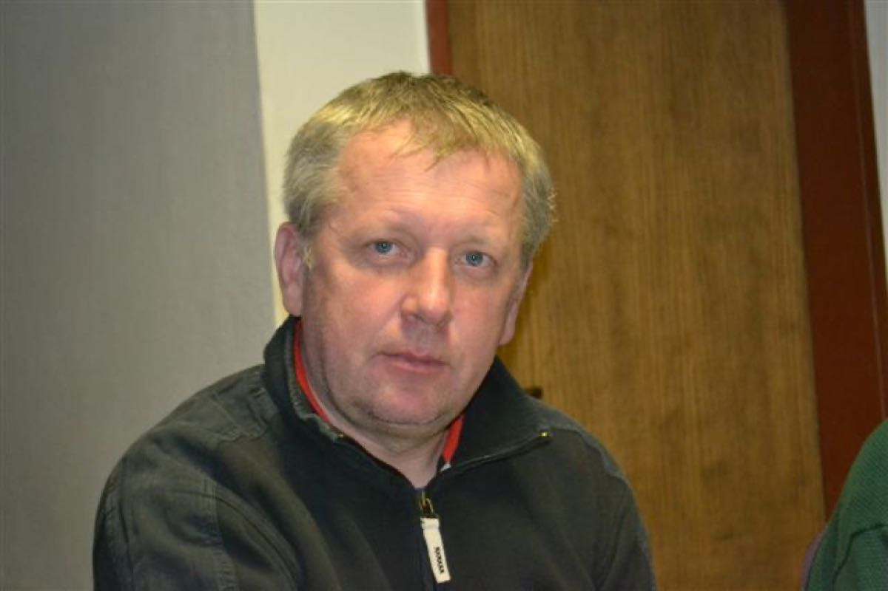
Prva sezona po vrnitvi med tretjeligaše je bila boj za obstanek. V ligi štirinajstih ekip smo zasedli enajsto mesto s 30 točkami, Jaka Zaletel pa je bil s 15 goli osmi strelec lige. Kadeti so v skupni ekipi s Savo, ki je nastopala pod sponzorskim imenom Sava Simšport, spomladi vodili drugo državno ligo zahod.
Zapletlo se je zunaj igrišč. Čeprav smo junija 1998 skupaj s šestimi klubi podpisali dogovor o kranjski nogometni piramidi, je NK Triglav 5. maja 1999 na Mestno občino Kranj poslal pismo, v katerem nas je obtožil nesodelovanja in med drugim zahteval zmanjšanje dotacij našemu klubu. Tisto poletje so k Triglavu prestopili Arben Kukolaj, Damir Čosič, Zlatko Andonovski, Dragan Majkič in Dejan Božičič, k nam pa se je proti plačilu odškodnine vrnil Damjan Bizjak.
Le nekaj dni po Triglavovem pismu, 10. maja 1999, je Vladimir Lah izvršnemu odboru predstavil projekt Zarica 2000. V ožjem delu je pomenil prizidek z dvema prostoroma za sodnike in delegata, ki sta služila tudi kot klubska pisarna, širše pa zamisel o razvoju športa v južnem delu Kranja.
1998
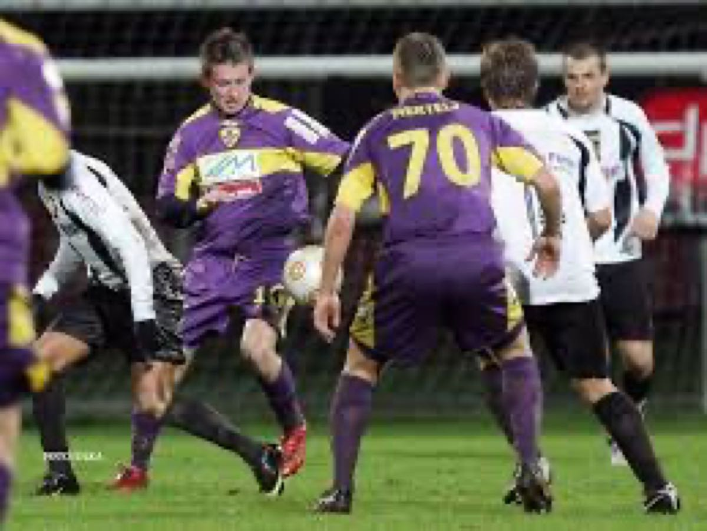
Sezona 1997/98 je bila do takrat naša najuspešnejša. Člani smo v osmerici prve gorenjske lige osvojili tretje mesto, kadeti pa so v skupni ekipi Naklo Zarica pod vodstvom Jožeta Križaja postali prvaki druge državne kadetske lige zahod. To je bil prvi državni naslov v zgodovini kluba; Klemen Šantak je bil z 18 goli drugi strelec lige, v moštvu je igral tudi Janez Aljančič, poznejši slovenski prvak z Domžalami.
Ker je NZS tretjo ligo prav tedaj razširila z dveh na štiri skupine, nam je tretje mesto zadostovalo za vrnitev v državni rang; v tretji ligi smo namreč igrali že v sezoni 1992/93, zdaj pa smo dobili mesto v novi skupini 3. SNL center.
Na občnem zboru 20. junija 1998 je bil Andrej Čelik znova izvoljen za predsednika. Poleti se je končalo sodelovanje z Naklom, zato smo 27. julija 1998 podpisali pogodbo o skupnih mladinskih in kadetskih ekipah z NK Sava. V pokalu Slovenije smo 9. avgusta 1998 doma izgubili z Goriškimi opekarnami 1:3, teden dni pozneje, 15. avgusta 1998, pa se je vrnitev med tretjeligaše začela najlepše, z zmago 1:0 v Moravčah.
1997
Jesen 1997 je bila naša. V prvi gorenjski ligi smo prezimili na vrhu, Gorenjski glas je poročilo naslovil kar »Zarica vodi«, jesenski del pa smo sklenili kot gorenjski jesenski prvaki z 18 točkami, tremi več od Poleta. Mladi so v drugi državni ligi 6. septembra 1997 v Naklem po klubskem zapisu z 9:0 odpravili Kolpo iz Podzemlja, dva tedna pozneje pa v Portorožu zmagali še z 8:1.
Kako je klub takrat dihal, je 9. decembra 1997 popisal Gorenjski glas v velikem portretu z naslovom »Mladost je vrlina kluba«. Imeli smo okoli 120 registriranih igralcev, vse delo je bilo amatersko, po oceni časopisa pa smo bili po delu z mladimi drugi najuspešnejši klub na Gorenjskem. Člansko ekipo je vodil Zoran Zelič, pri mladih sta delala Jože Križaj s kadeti in Danilo Novak z mladinci. Ker naše igrišče še ni ustrezalo predpisom, so mladinci in kadeti domače tekme igrali v Naklem.
1996
Na skupščini 28. junija 1996 smo za predsednika izvolili Andreja Čelika in hkrati uskladili klubska pravila z novo slovensko zakonodajo. Nova uprava je kmalu potegnila najpomembnejšo potezo: 8. novembra 1996 sta KS Orehek Drulovka in naš klub sklenila večletno najemno pogodbo za igrišče ob Savi, po poznejšem časopisnem zapisu kar za dvajset let. S tem smo prvič dobili trdno podlago za razvoj Športnega parka Zarica.
Sezono 1995/96 smo v prvi gorenjski ligi končali kot podprvaki, tik za Lescami. Jeseni 1996 so naši mladinci v skupni ekipi z NK Naklo prvič zaigrali na državni ravni, v drugi mladinski ligi zahod. Boleli pa so odhodi mladih: v Triglav je med drugimi prestopil komaj trinajstletni Jaka Štromajer, ki so ga pri nas že takrat videli kot kandidata za državno reprezentanco.
1995
Sezono 1994/95 smo v gorenjski ligi znova končali na petem mestu, tokrat s 23 točkami; prvak je bilo Visoko z 39. Poleti smo izgubili dva nadarjena fanta: prestop Dejana Nišandžiča k Triglavu Creini, takratnemu tretjeligašu, je julija 1995 zabeležil tudi Gorenjski glas, po klubskem zapisu pa je isto pot ubral še Sead Kulenovič.
Jeseni 1995 so mladinci nastopali v združeni ekipi Sava Zarica in domače tekme igrali v Stražišču. Z novo sezono 1995/96 se je spremenilo tudi točkovanje: zmaga je odtlej štela tri točke, zato poznejših lestvic ne gre primerjati s starimi.
1994
V sezoni 1993/94 smo se vrnili v gorenjsko ligo, ki je bila po nastanku 3. SNL četrti rang tekmovanja, in jo končali na petem mestu z 20 točkami. Sezona je bila razburkana, saj sta Creina in Tržič ligo zapustila že po jesenskem delu.
V ponos so nam bili kadeti: s Športplanom so bili izenačeni s 27 točkami in naslov prvaka izgubili šele na odločilni tekmi. Po klubskem zapisu je Gregor Grašič prestopil v Triglav; ta je takrat nosil ime Triglav Creina in bil tretjeligaš, torej ni šlo za odhod v vrh slovenskega nogometa.
1993
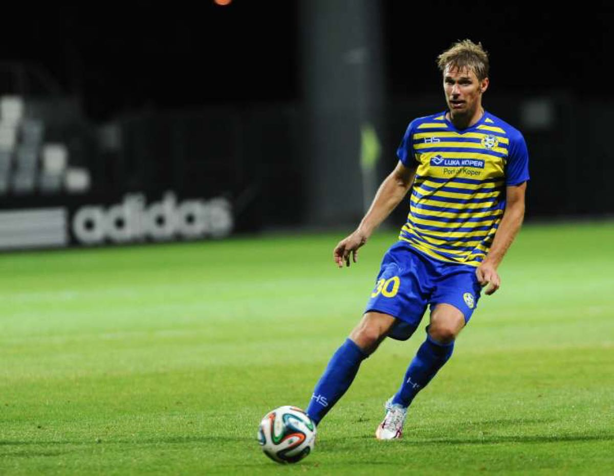
Prva državna sezona je bila kruta učilnica. V ligi štirinajstih ekip smo vso pomlad bíli boj za obstanek in sezono 1992/93 končali na dvanajstem mestu s 16 točkami. Ker se je liga po krstni izvedbi krčila, je izpadlo kar pet ekip; med njimi sva bila oba kranjska kluba, mi in Dolnov-Creina. Zadnje dejanje je bil domači poraz z 0:1 proti Biljam v zadnjem krogu junija 1993.
Isti teden pa se je začela druga zgodba. 26. junija 1993 so naši najmlajši dobili predizborni turnir v Stražišču; za najboljšega igralca je bil razglašen naš Jaka Štromajer, za najboljšega vratarja naš Zlatko Andonoski. Mladinci so vso sezono igrali v drugi mladinski ligi, julija pa se je Branko Thaler, strelec našega prvega državnega gola, vrnil k Živilom Naklo.
1992
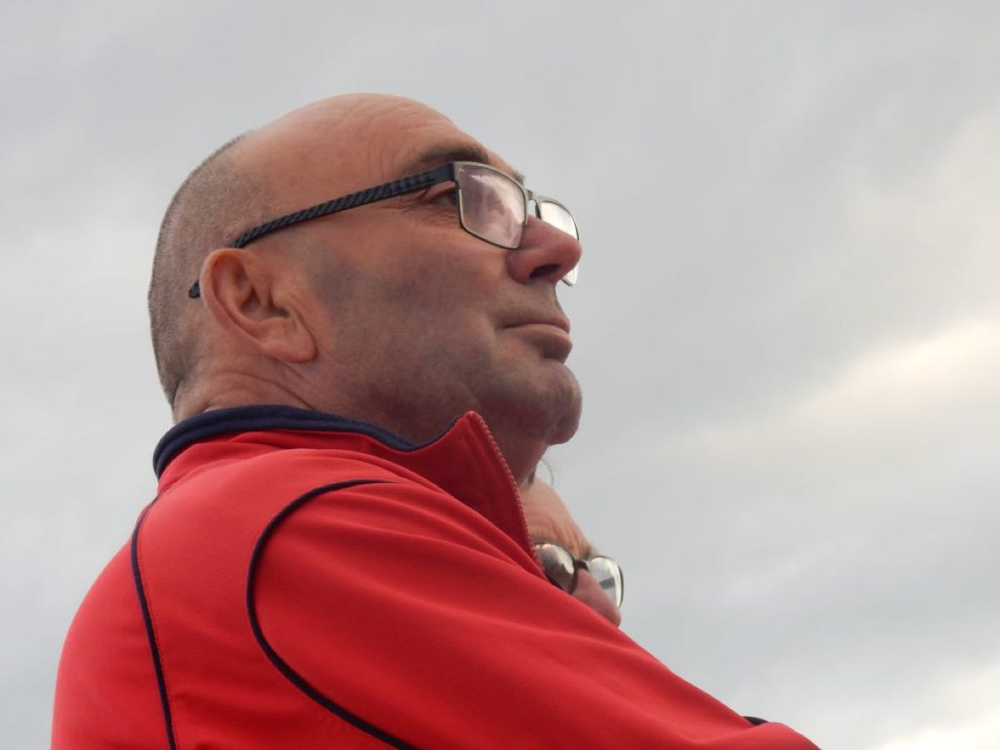
Pomladi 1992 smo se dolgo držali vrha gorenjske lige. O naslovu je odločal zadnji krog 6. junija 1992 na našem igrišču, kjer je LTH iz Škofje Loke zmagal z 1:0 in prvenstvo proslavil pri nas. A poraz nas ni stal ničesar: z drugim mestom (22 tekem, 31 točk, le točka za LTH) smo si že prej zagotovili mesto v novoustanovljeni 3. slovenski nogometni ligi. Junija 1992 smo se tako prvič v zgodovini vpisali na državni nogometni zemljevid. Gorenjska liga je bila tisto sezono še tretji rang slovenskega nogometa, z nastankom 3. SNL pa se je pomaknila na četrtega.
Državni krst smo dočakali 22. avgusta 1992: v prvem krogu 3. SNL zahod smo doma v gorenjskem derbiju z Jelovico LTH iz Škofje Loke remizirali 1:1. Od 14. minute smo zaostajali, potem pa je Thaler v 90. minuti izenačil in rešil naš državni krst. Naša prva postava na državni ravni: Triler, Muratagić, Kondić, Rešek, Prestor, Šink (Lebar), Kotnik, Mažgon (Suhadolnik), Thaler, Hribar, Kurent. Prva zmaga je padla 12. septembra 1992, ko smo doma z 2:1 ugnali Adrio iz Mirna; tudi takrat je prvi zadel Thaler.
Domače tekme smo igrali na svojem igrišču nad kanjonom Save pri tovarni Planika; ime Športni park Zarica se je v časopisju pojavljalo že tedaj, samo igrišče ob Savi pa so okoli leta 1982 prostovoljno zgradili mladi iz KS Orehek-Drulovka. Julija 1992 smo se s prvoligašem Živili Naklo dogovorili o sodelovanju in izmenjavi igralcev, kar je okrepilo našo ekipo. Po klubskem zapisu nas je v slovenski rang tekmovanja popeljal trener Zoran Zelič. Državni preboj je uspel tudi mladincem, ki so se junija 1992 prek kvalifikacij s Kortami prebili v drugo mladinsko ligo.
1991
Leto 1991 je bilo prelomno za državo in za naš šport. Slovenski nogomet je stopil na samostojno pot, klubi, ki so še leto prej nastopali v ligah nekdanje skupne države, pa so čez noč povečali konkurenco v naših ligah. Sami smo sezono 1990/91 v gorenjski ligi končali na sedmem mestu z 19 točkami, prvak je bil Bled.
1990
Sezono 1989/90 smo v prvi gorenjski ligi končali na tretjem mestu s 27 točkami. Pred nami sta bili le prvak Sava in škofjeloški LTH, kar je bil naš najboljši izkupiček v mladi enotni gorenjski ligi do takrat.
1989
V sezoni 1988/89 je bil na Gorenjskem vzpostavljen tekmovalni sistem, kakršnega poznamo še danes: enotna prva gorenjska liga z dvanajstimi klubi in pod njo druga. Kar šest klubov je prihajalo z območja kranjske občine, zato je bila skoraj vsaka druga tekma derbi s sosedi.
V krstni izvedbi smo osvojili sedmo mesto z 20 točkami, prvi naslov gorenjskega prvaka pa je odnesel Britof. Nižje v gorenjski ligi do danes nismo bili nikoli uvrščeni.
1988
Zadnjo sezono pred veliko reorganizacijo tekmovanja, 1987/88, smo po klubskem zapisu spet končali na drugem mestu. Tretjič v petih letih smo bili prvi zasledovalec prvaka, naslov kranjske lige pa nam je za las ostal nedosežen, saj je nato prišla nova ureditev gorenjskega nogometa.
1987
Sezona 1986/87 je bila rezultatsko slabša, a je v prvo ekipo pripeljala sveža imena. Med njimi sta se uveljavila Slavko Lebar in Darko Savšek. Savšek je klubu ostal zvest še desetletja; leta 2011 je bil izvoljen v naš upravni odbor.
1986
Uspeh iz prejšnjega leta smo po klubskem zapisu ponovili: sezono 1985/86 smo v prvi občinski ligi Kranj spet sklenili na drugem mestu. Iz novinca smo postali stalni izzivalec vrha.
1985
Kot novinci med kranjsko elito smo sezono 1984/85 po klubskem zapisu končali na presenetljivo visokem drugem mestu. Lestvice za tiste kranjske sezone se nam niso ohranile, spomin na uspeh pa je v klubu ostal živ.
1984
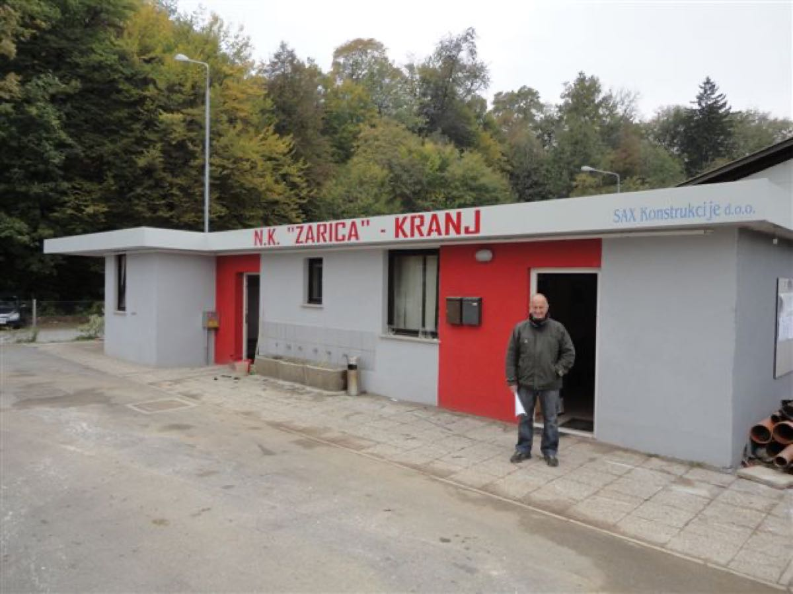
Po šestih dolgih sezonah nam je v sezoni 1983/84 končno uspel preboj v prvo občinsko nogometno ligo Kranj, med takratno kranjsko elito. Tekmovalni sistem se je medtem spet spremenil: občina Kranj je imela dve svoji ligi, preostala Gorenjska pa je tekmovala v enotni medobčinski ligi.
Predsedniško mesto je drugič prevzel Zvone Kuželj, domačin z Orehka. V klub so prihajali vedno novi fantje in po načrtnem delu z mladimi smo postajali prepoznavni po vsej okolici.
1983
V sezoni 1982/83 smo šesto leto zapored igrali v drugi občinski nogometni ligi Kranj, prvič pod imenom Zarica, ki smo ga sprejeli na občnem zboru leta 1982 po kanjonu Save pod našimi domovi. Gorenjski nogomet je bil takrat znova preurejen in razdeljen na tri ločene lige: ONL Kranj, ONL Škofja Loka ter skupno ligo Radovljice, Jesenic in Tržiča. Na vrnitev med kranjsko elito smo čakali že od izpada leta 1978 in prav ta čakalnica se je počasi iztekala.
1982

Leta 1982 smo se na klubski skupščini odločili, da bo klub odslej nosil ime po kanjonu reke Save: Zarica. Ime pove, kje smo doma. Med Sorškim in Kranjskim poljem se je Sava zarila v strugo, od tod Zarica, in že leta 1930 je Rudolf Badjura sotesko opisal kot imenitno savsko deber svoje vrste, primerljivo z blejskim Vintgarjem. Časopis je prehod zabeležil jeseni: še 14. maja 1982 je Gorenjski glas poročal o Filmarjih, 15. oktobra 1982 pa je bralcem prvič zapisal »Zarica (prej Filmarji)«. Od imena Filmarji smo se poslovili z naslovom mladinskih prvakov.
Istega leta je ob Savi v krajevni skupnosti Orehek-Drulovka zraslo novo nogometno igrišče, ki so ga mladi zgradili sami, večinoma z udarniškim delom, in ga ponosno pokazali na krajevnem prazniku avgusta 1982. Gorenjski glas je zapisal, da ga bodo z leti razširili in uredili v pravi rekreacijski center. Prav to igrišče ob Savi je fizični začetek današnjega Športnega parka Zarica.
1981
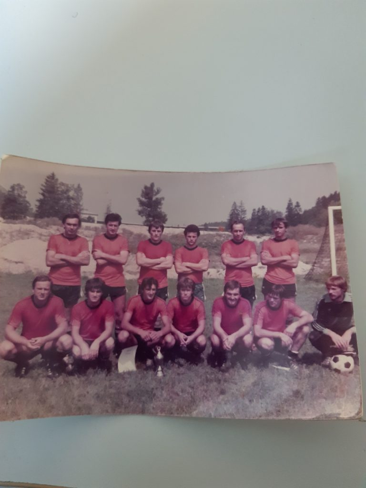
Ocepkovo delo je hitro obrodilo sadove. Člani smo sezono 1980/81 v občinski B ligi končali na tretjem mestu z 21 točkami iz 18 tekem in zadetki 49:32, mladinci pa so osvojili dvojno lovoriko: postali so prvaki lige in hkrati njeno najbolj disciplinirano moštvo, Pavlin pa je bil prvi strelec lige, kar je zapisal tudi Gorenjski glas junija 1981. Vodenje kluba je v tem času prevzel Branko Remic, za njim pa Marko Oblak.
Isto poletje, 31. julija 1981, je bil odprt Delavski most čez Savo med Čirčami in Laborami, most, katerega trasa nas je stala igrišča na Orehku. Jeseni 1981 smo domače tekme še naprej igrali pod imenom Filmarji, a misel na lasten, nov dom ob Savi je že zorela.
1980
Pred sezono 1980/81 je člansko moštvo prevzel trener Srdan Ocepek, eden najbolj načelnih ljudi, kar jih je kdaj delalo v našem klubu. Na prvem sestanku je jasno povedal, da pri njem šteje samo delo, in prvič v naši zgodovini uvedel obvezno prisotnost na treningih. Nekaj igralcev je zato preprosto odšlo, a prav tu se je začrtala pot napredka.
V člansko ekipo so prišli obetavni mladinci Robert Vodan, Renato Pavlin, Anton Čulo, Branko Švegelj in Adolf Brodarič, okrepili pa so nas še Vinko Kurent, Zoran Zelič, Miro Martinovič in nekoliko kasneje vratar Miro Vodan. Občinska B liga se je medtem razširila na sedem klubov, tekmovanje pa je dobilo razigravanje za prvaka in za obstanek.
1979
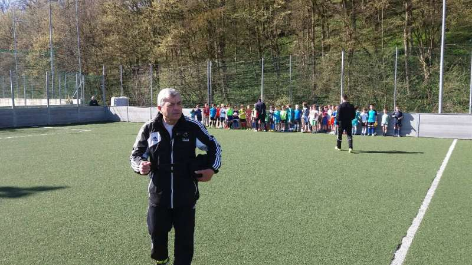
V drugi občinski ligi, kjer je pet klubov igralo kar štirikrožni sistem, smo zaigrali s prenovljenim moštvom, katerega jedro so sestavljali Borut Gros, Miro Molk, Andrej Kožuh, Boris Mrak in Vojko Razdrh. Klub je v teh letih skoraj sam na svojih ramenih nosil Stojan Humar: hkrati je bil predsednik, trener, vodja šolskih krožkov in še registracijski komisar pri občinski nogometni zvezi. Prvo mesto smo dve sezoni zapored lovili zaman, predsedniško mesto pa je od Humarja približno v tem času prevzel Zvone Kuželj.
Konec sedemdesetih let nas je doletel še en udarec: čez naše igrišče na Orehku je bila začrtana trasa mostu, ki naj bi Stražišče in Labore povezal s Planino. Igrišče smo izgubili in postali, kot smo sami zapisali, brezdomci. Nismo pa obupali. Skupaj s kranjsko Komunalo smo po lastni klubski pripovedi kupili zemljišče ob Savi. Na tistem zemljišču danes stoji Športni park Zarica.
1978
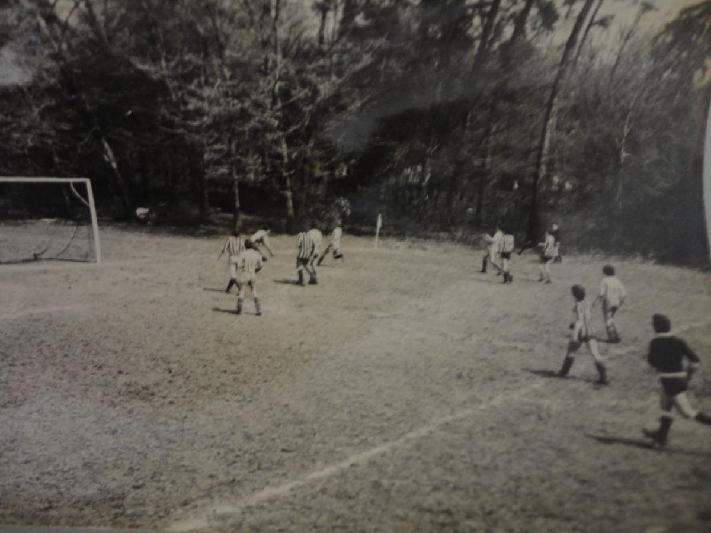
Sezona 1977/78 je bila najtežja v naši dotedanji zgodovini. V občinski nogometni ligi Kranj smo v 22 tekmah zbrali le eno zmago in dva remija, prejeli 104 zadetke ob 30 danih ter s štirimi točkami pristali na enajstem mestu med dvanajstimi klubi. Sledil je izpad v drugo občinsko ligo. Sami smo padec pozneje pošteno povezali s tem, da prvi predsednik Živko Kladnik ni bil več tako dejaven kot v prvih letih, in pot nazaj poimenovali trnovo. A klub je zdržal, in to je bilo tisto leto najpomembnejše.
1977
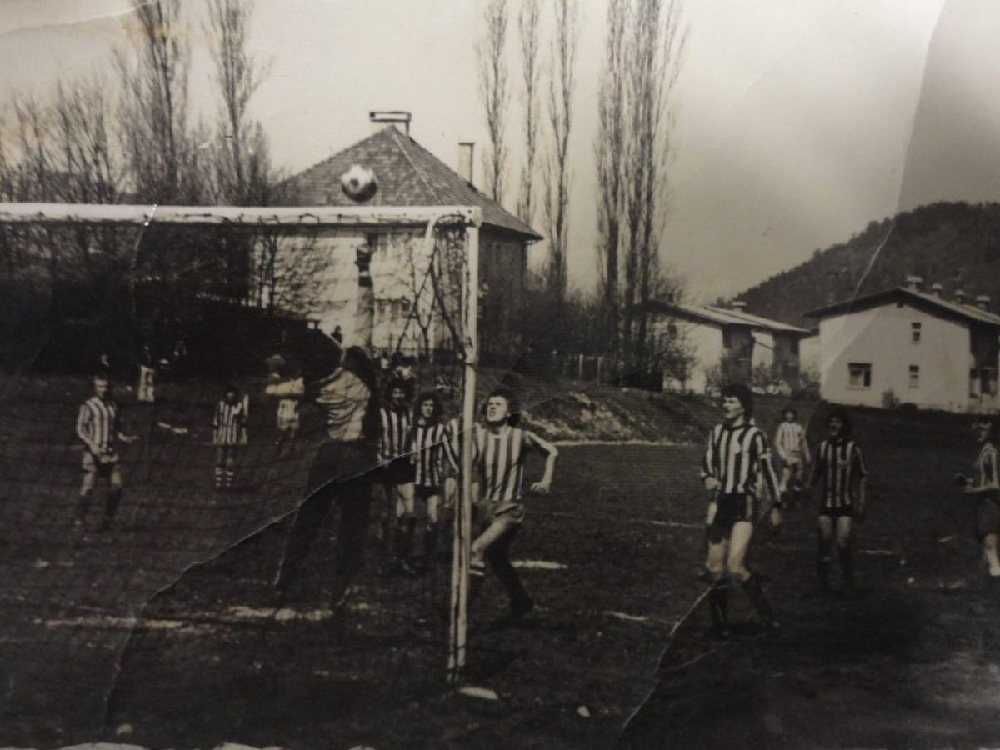
Kot prvaki južne skupine smo bili spomladi 1977 uvrščeni v novoustanovljeno prvo kranjsko občinsko ligo, za tedanje razmere izjemno močno druščino, saj so v njej igrali Triglav, Sava, Korotan, Naklo in Šenčur, sami klubi, ki so še pred kratkim nastopali na višji ravni. Za nas, komaj tri leta star klub, je bila to velika šola. Sezono smo končali na sedmem mestu med osmimi z 10 točkami in zadetki 23:35, prvak je postal Triglav. Reforma je hkrati pomenila, da vzpenjanja po lestvici tako rekoč ni bilo več: do konca osemdesetih let se iz kranjske občinske lige ni dalo napredovati nikamor, igralo se je za lokalni ugled.
1976
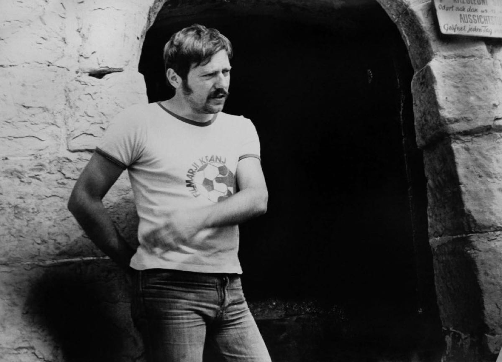
Leta 1976 smo prvič nastopili z mladinsko ekipo in mladi so takoj pokazali zobe: konec oktobra 1976 je Gorenjski glas poročal, da mladinci v svoji skupini vodijo z 11 točkami. Za razmah pri mladih je imel največ zaslug Stojan Humar, ki je nogomet ponesel med otroke naselja Planina ter na osnovnih šolah Staneta Žagarja in Jakoba Aljaža, kmalu zatem še na OŠ Orehek. Iz tega dela je zrasla naša nogometna šola.
Jesen 1976 nam je prinesla tudi prvo lovoriko v zgodovini kluba. V medobčinski ligi članov, skupina jug (v našem letopisu jo vodimo kot 2. GNL jug), smo po štirih odigranih krogih s šestimi točkami in zadetki 14:9 zasedali prvo mesto, ko je bilo tekmovanje zaradi velike reorganizacije slovenskega nogometa po portoroških sklepih, sprejetih 17. aprila 1976, ustavljeno in se ni več nadaljevalo. Gorenjski glas je 29. oktobra 1976 zapisal preprosto: »Filmarji prvi«. Ta naslov jesenskih prvakov ostaja naš prvi.
1975
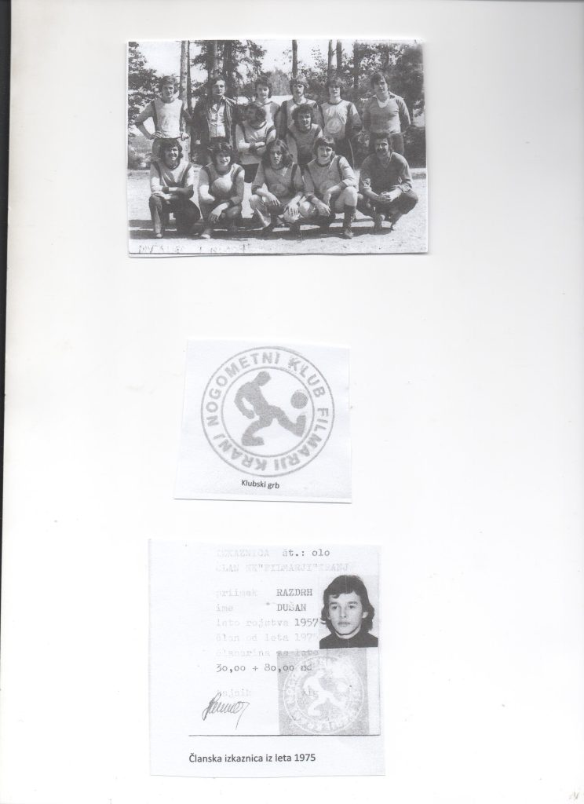
Junija 1975 smo sklenili svojo prvo prvenstveno sezono. Po končni lestvici Gorenjskega glasa z 20. junija 1975 smo v I. razredu gorenjske članske lige osvojili četrto mesto z 22 točkami, po točkah izenačeni s tretjeuvrščenimi Retečami, ob osmih zmagah, šestih remijih in štirih porazih ter razliki v zadetkih 39:33. Prvak je postala Alpina Žiri, prav tisti klub, proti kateremu smo jeseni odigrali svojo prvo tekmo in ki je bil v ligi prav tako novinec kot mi.
Istega leta smo dobili tudi svoj prvi pravi dom: igrišče na Orehku. Z novo lokacijo se nam je pridružila skupina domačinov, med njimi Zvone Kuželj, Milan Porš, Brane Kalan, Alojz Jenko, Zdenko Hafner in Marko Oblak, ki so v naslednjih letih prevzemali tudi vodstvene naloge v klubu. Orehek je od takrat naprej trdno vpisan v našo zgodbo.
1974
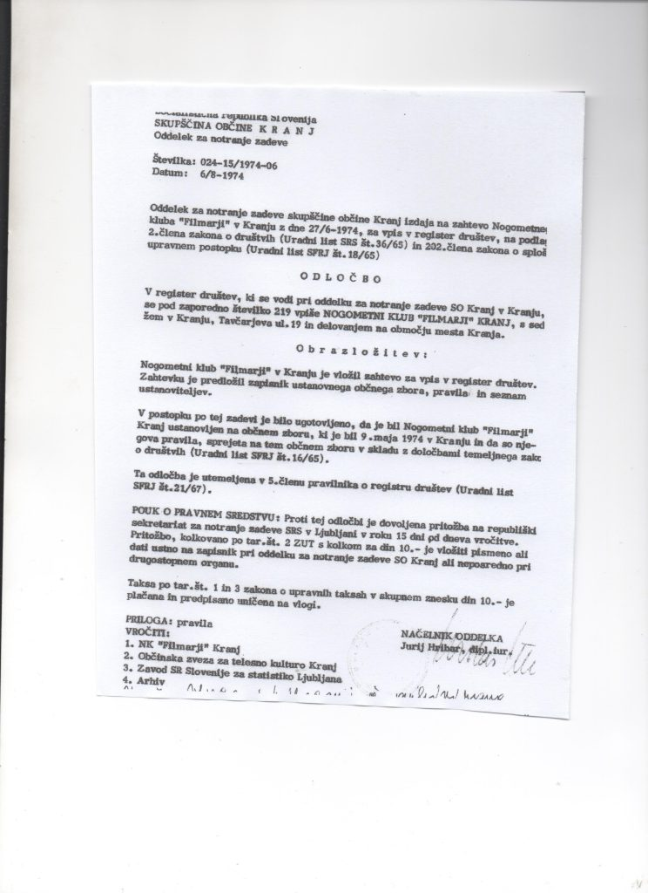
Naše korenine segajo v kranjsko divjo ligo poznih šestdesetih in zgodnjih sedemdesetih let, kjer je igrala druščina, ki jo je poleg nogometa družila ljubezen do fotografije in filma. Zato ime kluba ni nogometno: ko je bilo treba izbrati ime, so bili vsi složni, da je Filmarji najprimernejše. Gonilna sila je bil Živko Kladnik, mentor fotografske sekcije v kranjskem Delavskem domu, ki je po vrnitvi s služenja vojaškega roka potisnil zamisel o pravem, registriranem klubu do konca. Svoje začetke štejemo od leta 1973, ko so priprave stekle, uradni rojstni list pa nosi letnico 1974: ustanovni občni zbor smo imeli 9. maja 1974, štirinajst ustanoviteljev je podpisalo ustanovno listino, sedež je bil na Tavčarjevi ulici 19, in 6. avgusta 1974 nas je občina Kranj z odločbo vpisala v register društev pod zaporedno številko 219. Vsa upravna taksa je znašala 10 dinarjev. Prvi predsednik je postal Kladnik, grb s silhueto nogometaša je narisal Nejc Slapar, po Kladnikovem spominu pa je bila naša prva barva rumena.
Prvo prvenstveno tekmo smo odigrali na prelomu avgusta in septembra 1974 v Žireh proti domači Alpini in pod vodstvom trenerja Jožeta Lipeja iztržili remi 1:1. Sodil je Janez Torkar, takrat eden najboljših gorenjskih sodnikov. Že teden pozneje je padla prva zmaga: Filmarji : Plamen 6:1, na naši prvi domači tekmi v Kokrškem logu, kjer smo gostovali pri NK Primskovo, ker svojega igrišča še nismo imeli.
Novinci smo začeli sanjsko. Po šestih krogih smo bili na vrhu lestvice in Gorenjski glas je 11. oktobra 1974 poročilo naslovil kar »Filmarji v vodstvu«. Teden dni zatem smo v Škofji Loki proti Retečam izgubili 1:4 in vrha nismo več ujeli, a jesen 1974 je pokazala, da novi klub iz Kranja ni prišel zraven samo za štetje.
Iz klubskega arhiva
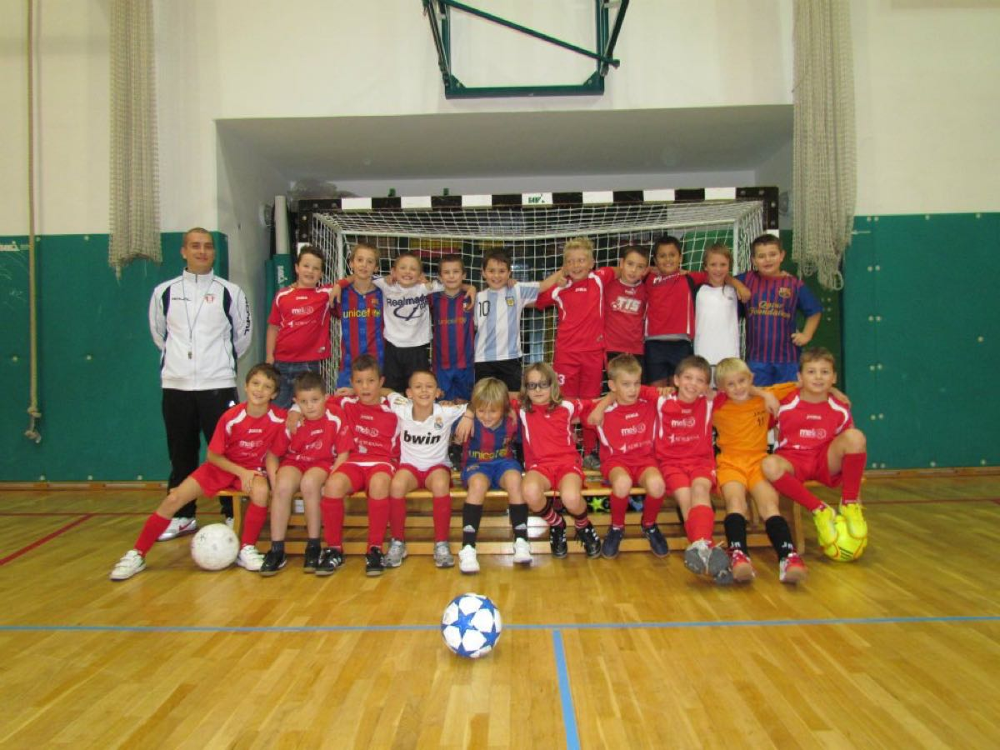
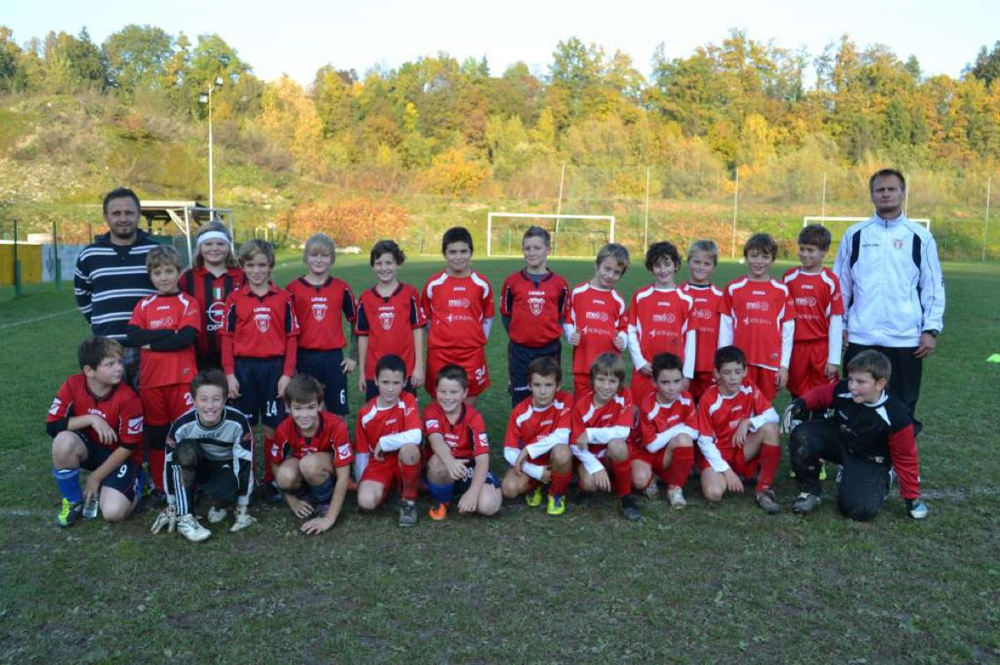
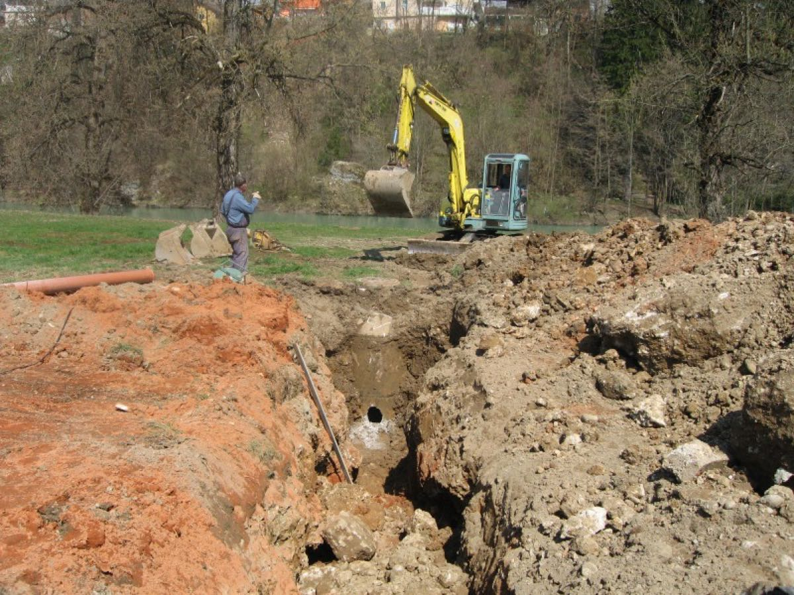
Arhiv lestvic po sezonah
Končne lestvice naših selekcij skozi sezone. Klikni sezono za prikaz.
Sezona 2013/14
ČLANI – 3.SNL-zahod 1. Tolmin 60 2. Zarica 53 3.
Izola 40 4. Ivančna Gorica 40 5. Zagorje 40 6.
Rudar Trbovlje 40 7. Jadran Dekani 39 8. Brda 38 9.
Tabor Sežana 34 10. Ajdovščina Škou 30 11. Adria 30 12.
Jezero Medvode 29 13. Sava Kranj 27 14. Calcit Kamnik 8 Igralci z vsaj enim nastopom za naš klub so bili: Ademaj Klodian, Ajdinovič Armin, Babič Darko, Benedičič Blaž, Bernik Andraž, Bojič Momir, Božićić Dejan, Dimitrov Žarko, Djukič Darko, Gashi Elbasan, Gjeorgiev Viktor, Kremenovič Peter, Lavrinc Luka, Marijan Mario, Marinkovič Bojan, Mulalič Ajdin, Muzaferovič Sean, Nazič Jasmin, Pečnik Matic, Peternel Matej, Pirc Matej, Rems Tadej, Preradovič Darko, Robnik Dejan, Stanarevič Danijel, Stanko Ladislav, Stojkov Dejan, Stojnič Petar, Šimenc Jaka, Šubic Nejc, in Šujica Blaž, Kralj strelcev celotne lige je bil z 2goli Blaž Šujica.
Trener: Zupančič Janez
MLADINCI – GMNL 1. Zarica Kranj 44 2. Naklo 43 3. Jesenice 37 5. Bled-Bohinj 23 6. Šobec Lesce 21 7. Visoko Preddvor 2 Za NK Zarica Kranj so igrali: Knific Košir Bober, Bernik Andraž, Breščak Blaž, Burgar Rok, Damjanovič Alen, Debeljak Jan, Djakovič Simo, Gashi Trim, Gjeorgijev Viktor, Ilič Stojan, Košir Miha, Mubi Jure, Susak Patrik, Šimenc Jaka, Šubic Nejc in Teran Rok. Trener: Jerič Igor Ilič Stojan je bil naj strelec lige.
KADETI – GKNL 1. Jesenice 54 2. Šobec Lesce 40 3. Naklo 37 4. Bled-Bohinj Mayer 35 5. NK Žiri 26 6. Zarica Kranj 23 7. Visoko Preddvor 19 8. Niko Železniki 6 Za NK Zarica Kranj so igrali: Ademaj Klodijan, Bolič Dean, Dolinar Marko, Dragojevič predrag, Erjavec Tim, Eržen Anže, Grbič Alen, Horvat Kostja, Jereb Domen, Konjar David, Kuqi Granit, Muzaferovič Sean, Podlogar Mark, Pogačnik Žiga, Stojanac Matej, Stojkov Dejan, Šabani Agan, Škafar Aljaž, Šorli Blaž, Teran Luka in Vlašič Maj. Trener: Kepic Rado
Na skupni lestvici mladincev in kadetov so zmagale Jesenice, naši ekipi sta bili z zaostankom osemnajstih točk tretji.
STAREJŠI DEČKI U-14 – GNLSD
LIGA ZA PRVAKA 1. Jesenice 55 2. NOGA Triglav 53 3.
NK Žiri 48 4. Kranjska Gora Vandrovc43 5. Zarica Kranj A 40 6.
Šobec Lesce 38 7. Bohinj Bled Mlino 23 8. Britof 17 LIGA ZA OBSTANEK 1.
Šenčur Velesovo 28 2. Visoko Preddvor 21 3. Naklo 21 4.
Sava Kranj 20 5. Niko Železniki 14 6. Zarica Kranj B 12 7.
Škofja Loka 12 Za Zarica Kranj A in Zarica Kranj B so igrali: Ažman Aljoša, Abdič Alen, Basta Jan, Basta Nik, Basta Tim, Bokal Šter Tijan, Breznik Mark, Čajič Nik, Černelč Nejc, Čosič Igor, Eržen Vid, Ganibegovič Alen, Hribernik Tomaž, Jerič Jaka, Jovič Žiga, Kljajič Filip, Kondič Dejan, Korenčan Luka, KoTnik Marko, Lopatič Mark, Marič Tilen, Markič Tilen, Martič Gašper, Mehani Erjon, Muzaferovič Hasan, Pantelič Sebastjan, Pavlin Žiga, Podvratnik Renato, Porenta Domen, Samardžič Isak, Sankovič, Stankovič Jan, Tkalec Matej in Vučkič Edin. Trenerja: Žukevič Tomaž in Obradovič Dejan.
MLAJŠI DEČKI U-12 – 1. GNLMD 1. Triglav Domplan 249 2.
Triglav Podgorje 193 3. Britof 173 4. Šobec Lesce 148 5.
Kondor Polet 127 6. Šenčur 121 7. Naklo 119 8.
Zarica Kranj 113 9. Jesenice 86 10. NK Žiri 85 11.
Ločan škofja Loka 57 12. Velesovo 56 Za NK Zarica Kranj so igrali: Dobraš David, Hudalin žiga, Jambrešič Mitja, Kovič Blaž, Kvrdžič Marko, Logar Aljaž, Maksimovič Dejan, Mlakar Žiga, Muzaferovič Benjamin, Pahulje Žan, Peterc Bor, Potočnik Žan, Pregrad Anže, Stevanovič Gal, Suhadolnik Nejc, Trolli Šerif, Zabavnik Marc, Wilkesmann Luk, Xhekaj Endrit in Vranješ Štefan Trenerja: Robnik Dejan in Stanjko Uroš
Tri ekipe U-10 i tri ekipe U-8 so igrale tekme v okviru MNZG, ki pa niso štele za končno uvrstite
Tudi leto 2013 je zaznamovano z vlaganjem v infrastrukturo. Klub je nadaljeval s posodobitvijo ŠP Zarica. Lično izdelan oporni zid, ki razmejuje igrišče z umetno travo in cesto, je nadaljevanje začrtanih planov o izgledu ŠP Zarica. Sezona 212/13 je bila slabša od pričakovanj, vendar pa ne porazna. Člani so uspeli zadržati tretjeligaški status, mladinci so postali gorenjski prvaki, vendar se skupaj s kadeti niso uspeli uvrstiti v višji rang tekmovanja.
Pokalno tekmovanje smo pri članih končali že v drugem krogu, ko smo bili neuspešni v Britofu. Mladinci so bili uspešnejši, saj so v četrtfinalu premagali prvoligaški Triglav, v polfinalu pa smo morali priznati premoč drugoligašu iz Šenčurja.
V juniju je bilo v ŠP Zarica Evropsko prvenstvo logističnih izpostav DSV, z udeležbo več kot 500 sodelujočih.
Sezona 2012/13
ČLANI – 3.SNL-zahod 1. AH Mas tech 49 2. Tolmin 43 3.
Izola 39 4. Adria 38 5. Tabor Sežana 36 6.
Zagorje 35 7. Brda 35 8. Ivančna Gorica 33 9.
Rudar Trbovlje 32 10. Jadran Dekani 31 11. Zarica Kranj 29 12.
Calcit Kamnik 21 13. Bilje 13 Igralci z vsaj enim nastopom za naš klub so bili: Ajdinovič Armin, Begič Sanel, Benedičič Blaž, Bernik Andraž, Bojič Momir, Dimitrov Dejan, Dimitrov Žarko, Galič Miran, Grvala Alen, Jerkovič David, Kern Tim, Križaj Jure, Nazič Jasmin, Nuredini Gazmend, Pečnik Matic, Peternel Matej, Pirc matej, Poplatnik Matej, Preradovič Darko, Robnik Dejan, Romič Gregor, Smajlovič Admin, Stanarevič Danijel, Šmid Rok, Šubic Nejc, Šujica Blaž, Šušteršič Martin, Tallarini Miha, Vokshaj Leotrim in Zupančič Nejc. Največ zadetkov je, čeprav je igral le v spomladanskem delu prvenstva, prispeval Blaž Šujica, in sicer 9.
Trener: do desetega kroga Trebec Marko, v nadaljevanju Zupančič Janez
MLADINCI – GMNL 1. Zarica Kranj 44 2. Naklo 43 3. Jesenice 37 5. Bled-Bohinj 23 6. Šobec Lesce 21 7. Visoko Preddvor 2 Za NK Zarica Kranj so igrali: Knific Košir Bober, Bernik Andraž, Breščak Blaž, Burgar Rok, Damjanovič Alen, Debeljak Jan, Djakovič Simo, Gashi Trim, Gjeorgijev Viktor, Ilič Stojan, Košir Miha, Mubi Jure, Susak Patrik, Šimenc Jaka, Šubic Nejc in Teran Rok. Trener: Jerič Igor Ilič Stojan je bil naj strelec lige.
KADETI – GKNL 1. Jesenice 54 2. Šobec Lesce 40 3. Naklo 37 4. Bled-Bohinj Mayer 35 5. NK Žiri 26 6. Zarica Kranj 23 7. Visoko Preddvor 19 8. Niko Železniki 6 Za NK Zarica Kranj so igrali: Ademaj Klodijan, Bolič Dean, Dolinar Marko, Dragojevič predrag, Erjavec Tim, Eržen Anže, Grbič Alen, Horvat Kostja, Jereb Domen, Konjar David, Kuqi Granit, Muzaferovič Sean, Podlogar Mark, Pogačnik Žiga, Stojanac Matej, Stojkov Dejan, Šabani Agan, Škafar Aljaž, Šorli Blaž, Teran Luka in Vlašič Maj. Trener: Kepic Rado
Na skupni lestvici mladincev in kadetov so zmagale Jesenice, naši ekipi sta bili z zaostankom osemnajstih točk tretji.
STAREJŠI DEČKI U-14 – GNLSD
LIGA ZA PRVAKA 1. Jesenice 55 2. NOGA Triglav 53 3.
NK Žiri 48 4. Kranjska Gora Vandrovc43 5. Zarica Kranj A 40 6.
Šobec Lesce 38 7. Bohinj Bled Mlino 23 8. Britof 17 LIGA ZA OBSTANEK 1.
Šenčur Velesovo 28 2. Visoko Preddvor 21 3. Naklo 21 4.
Sava Kranj 20 5. Niko Železniki 14 6. Zarica Kranj B 12 7.
Škofja Loka 12 Za Zarica Kranj A in Zarica Kranj B so igrali: Ažman Aljoša, Abdič Alen, Basta Jan, Basta Nik, Basta Tim, Bokal Šter Tijan, Breznik Mark, Čajič Nik, Černelč Nejc, Čosič Igor, Eržen Vid, Ganibegovič Alen, Hribernik Tomaž, Jerič Jaka, Jovič Žiga, Kljajič Filip, Kondič Dejan, Korenčan Luka, KoTnik Marko, Lopatič Mark, Marič Tilen, Markič Tilen, Martič Gašper, Mehani Erjon, Muzaferovič Hasan, Pantelič Sebastjan, Pavlin Žiga, Podvratnik Renato, Porenta Domen, Samardžič Isak, Sankovič, Stankovič Jan, Tkalec Matej in Vučkič Edin. Trenerja: Žukevič Tomaž in Obradovič Dejan.
MLAJŠI DEČKI U-12 – 1. GNLMD 1. Triglav Domplan 249 2.
Triglav Podgorje 193 3. Britof 173 4. Šobec Lesce 148 5.
Kondor Polet 127 6. Šenčur 121 7. Naklo 119 8.
Zarica Kranj 113 9. Jesenice 86 10. NK Žiri 85 11.
Ločan škofja Loka 57 12. Velesovo 56 Za NK Zarica Kranj so igrali: Dobraš David, Hudalin žiga, Jambrešič Mitja, Kovič Blaž, Kvrdžič Marko, Logar Aljaž, Maksimovič Dejan, Mlakar Žiga, Muzaferovič Benjamin, Pahulje Žan, Peterc Bor, Potočnik Žan, Pregrad Anže, Stevanovič Gal, Suhadolnik Nejc, Trolli Šerif, Zabavnik Marc, Wilkesmann Luk, Xhekaj Endrit in Vranješ Štefan Trenerja: Robnik Dejan in Stanjko Uroš
Tri ekipe U-10 i tri ekipe U-8 so igrale tekme v okviru MNZG, ki pa niso štele za končno uvrstitev.
Klub je nadaljeval s posodobitvijo ŠP Zarica. Oporni zid, ki razmejuje glavno igrišče od pomožnega pomeni prvi korak k pridobitvi igrišča z umetno travo. V sezono 2011/12 smo krenili z mešanimi občutki. Ob koncu smo ugotovili, da so člani popolnoma izpolnili pričakovanja. Združitev ekip starejših dečkov, kadetov in mladincev s Savo ni prinesla željenih rezultatov. Razočaranje pomenijo tudi rezultati starejših cicibanov (U-10), posebna pohvala pa velja mlajšim dečkom, ki so igrali v dveh kategorijah.
Pokalno tekmovanje smo tako pri članih kot pri mladincih zaključili v polfinalu, ko smo obakrat morali priznati premoč Jeseničanom.
Največjo pridobitev predstavlja sprejetje mladinskega programa, ki velja do leta 2016.
Sezona 2011/12
ČLANI – 3.SNL-zahod 1. Krka 58 2. AH Mas tech 47 3.
Dekani 44 4. Ivančna Gorica 40 5. Tolmin 40 6.
Zagorje 39 7. Izola 36 8. Calcit Kamnik 35 9.
Zarica Kranj 35 10. Brda 35 11. Adria Miren 29 12.
Ilirska Bistrica 28 13. Jesenice 23 14. Svoboda 22 Matej Poplatnik je bil s 17 goli drugi strelec lige.
Poleg njega so barve našega kluba branili še: Aleš Poplatnik (cpt), Begič Sanel, Benedičič Blaž, Čevriz Dalibor, Cimirotič Kristjan, Dimitrov Žarko, Erazem Jure, Gros Ben, Hajdarpašič Semir, Jambrošič Blaž, Jeglič Matic, Jerkovič David, Jurič Dragan, Kovačevič Dragan, Križaj Jure, Krstev Darko, Kukavica Rok, Levstek Nejc, Nazič Jasmin, Ntsoli Beliaz Guy, Peternel Matej, Pirc Matej, Stanarevič danijel, Tallarini Miha, Vesel Matija, Vokshaj Leotrim in Zupančič Nejc. Trener: do tretjega kroga Levstek Ivo, v nadaljevanju Trebec Marko
MLADINCI – GMNL 1. Škofja Loka 34 2. Šobec Lesce 29 3. Bled-Bohinj Energoplan 27 4. Zarica Kranj 26 5. Alpina Žiri 20 6. Niko Železniki 6 7. Velesovo 0 Za NK Zarica Kranj so igrali: Aleš Luka, Benedičič Blaž, Bernik Andraž, Bolič Dean, Damjanovič Alen, Djakovič Simo, Gjeorgijev Viktor, Jovanov Blaže, Knific Košir Bober, Mišič Andrija, Paunov Robert, Smajlovič Admin, Strugar Danilo, Šimenc Jaka, Teran Rok in Vesel Matija Trener: Jerič Igor
KADETI – GKNL 1. Škofja Loka 43 2. Bled-Bohinj Mayer 37 3. Zarica Kranj 34 4. Šobec Lesce 26 5. Naklo 22 6. Visoko Preddvor 13 7. Niko Železniki 4 Za NK Zarica Kranj so igrali: Aleš jure, Bolič Dean, Breščak Blaž, Damjanovič Alen, Debeljak Jan, Demaku Hajdin, Erjavec Tim, Eržen Aleš, Gashi Trim, Hajsinger Tilen, Jevtinič Željko, Kavčič Anže, Konjar David, Košir Miha, Kuqi Granit, Mubi Jure, Muzaferovič Sean, Ogrinec David, Pustinek Kristjan, Ristov Robert, Stojanac Matej, Susak Patrik, Šabani Agan, Šimenc Jaka, Škaar Aljaž, Šorli Blaž, Teran Luka in Teran Rok. Trener: Jerič Igor
Na skupni lestvici mladincev in kadetov je zmagala Škofja Loka, naši ekipi sta bili z zaostankom sedmih točk tretji.
STAREJŠI DEČKI U-14 – GNLSD 1. Alpina Žiri 58 2. NOGA Triglav 55 3.
Šobec Lesce 50 4. Jesenice 49 5. Bohinj-Bled Mlino 40 6.
Visoko-Preddvor 38 7. Šenčur-Velesovo 25 8. Kranjska Gora 24 9.
Sava-Kranj 17 10. Škofja Loka 12 11. Zarica Kranj 10 12 Naklo 5 Za NK Sava-Kranj in Zarica Kranj so igrali: Abdič Alen, Aleš Jan, Basta Jan, Basta Nik, Basta Tim, Bergelj Filip, Bogataj Marjan, Corn Matej, Čajič Nik, Černelč Nejc, Čosič Igor, Čučnik Miha, Demaku Hajdin, Dolinar Marko, Dragojevič Predrag, Eržen Anže, Hribernik Tomi, Jerič Jaka, Konjar David, Kosmač Matic, Kosmač Nejc, Lopatič Mark, Melinc Andraž, Pintar Peter, Pirc Aljaž, Podlogar Mark, Porenta Domen, Pustinek Kristjan, Stojkov Dejan, Škafar Aljaž, Šubic Aljaž, Tičar Jan, Tkalec Matej, Vukič Edin, Duhanaj Robert, Smlatič Edi, Solar Marko, Xhejkaj Ajet, Capanu Mada, Draksler Andrej, Kelbič Matej, Kondič Dejan, Korenčan Luka, Pahulje Erazem, Ažman Aljoša, Bokal Šter Tijan, Breznik Mark, Eržen Vid, Ganibegovič Alen, Hribernik Tomaž, Kljajič Filip, Korenčan Uroš, Kukovica Vid, Marič Tilen, Marttič Gašper, Mehani Erjon, Muzaferovič Hasan, Pantelič Sebastjan, Pavlin Žiga, Podvratnik Renato, Sankovič Luka in Stankovič Jan.
Trenerja: Kepic Rado in Žukevič Tomaž
MLAJŠI DEČKI U-12 – 1. GNLMD 1. Triglav Domplan 236 2.
Triglav Podgorje 214 3. Britof 163 4. Jesenice 156 5.
Šenčur 135 6. Zarica Kranj 125 7. Velesovo 122 8.
Alpina Žiri 93 9. Kondor-Polet 88 10. Naklo 70 11.
Ločan škofja Loka 60 12. Bled-Bohinj 53 Za NK Zarica Kranj so igrali: Ažman Aljoša, Bokal Šter Tijan, Breznik Mark, Eržen Vid, Ganibegovič Alen, Hribernik Tomaž, Kljajič Filip, Korenčan Uroš, Kukovica Vid, Marič Tilen, Marttič Gašper, Mehani Erjon, Muzaferovič Hasan, Pantelič Sebastjan, Pavlin Žiga, Podvratnik Renato, Sankovič Luka, Stankovič Jan, Ademaj Jahir, Hudalin žiga, Jambrešič Mitja, Kavčič Luka, Klemenc Jan, Kovič Blaž, Kunaver Luka, Logar Aljaž, Maksimovič Dejan, Mlakar Žiga, Muzaferovič Benjamin, Pahulje Žan, Peterc Bor, Potočnik Žan, Pregrad Anže, Stevanovič Gal, Suhadolnik Nejc, Trolli Šerif, Zabavnik Marc, Wilkesmann Luk in Xhekaj Endrit Trenerja: Žukevič Tomaž in Gogič Milan
STAREJŠI CICIBANI U-10 – 1. GNLSC 1. Triglav Domplan 246 2.
Britof 182 3. Šenčur 148 4. Ločan Škofja Loka 143 5.
Jesenice 135 6. Alpina Žiri 130 7. Triglav Podgorje 114 8.
Kondor-Polet 103 9. Bled-Bohinj Energoplan 84 10. Preddvor-Visoko 83 11.
Naklo 76 12. Kranj-Bitnje 61 Za NK Zarica Kranj so igrali: Bukovec Matic, Cifer Timotej, Eržen Tjaž, Fajfar Aletej, Jerala Urban, Klemenc Jan, Marchesan Staš, Potočar Gašper, Sakač Luka, Samardžič Beno, Suhadolnik Maks, Zevnik Žak, Bernik Žan Matic, Čosič Igor, Jaklič Kristjan, Jerala Miha, Konjar Enej, Krelj Rožle, Kutnjak Luka, Lešnik Matic, Mehani Valdrin, Oblak Aljoša, Radulovič Manuel, Stankovič Matjaž, Stojanovič Luka, Stojanovič Rok in Končan David. Trenerja: Zagmajster Matjaž in Stanjko Uroš
Izvoljen je bil izvršni odbor kluba v sestavi:
Miro Vodan – predsednik Milan Perš – podpredsednik Robert Vodan, Mirko Draksler, Stojan Humar, Darko Savšek, Zoran Zelič, Žiga Perš, Aleš Eržen in Robert Konjar – člani Marija Sokol – nadzorni odbor
Na severni strani igrišča je bil zgrajen oporni zid. Lepši izgled parku daje tudi obnovljena interventna pot.
V prestopnem roku je ob trenerju Pavlinu klub zapustilo 7 nosilcev članske ekipe, zato smo za sezono 2011/12 morali zgraditi novo ekipo.
Pokalno tekmovanje smo pri članih zaključili v drugem krogu, ko smo morali priznati premoč Savi (2:1).
Tudi mladinci so klonili v drugem krogu, ko so z 2:1 izgubili v Šenčurju.
Sezona 2010/11
ČLANI – 3.SNL-zahod 1. Kalcer Radomlje 62 2. Dekani 51 3. Kalcit Football 50 4. Tolmin 46 5. Kranj 46 6. Krka 42 7. Ljubljana 40 8. AH Mas Tech 37 9. Ivančna Gorica 34 10. Adria Miren 32 11. Brda 31 12. Portorož Piran 24 13. Sava Kranj 8 14. Naklo 6
Za NK Zarica Kranj so igrali: Šmajd Gregor, Pavlica Milan, Kalan Miha, Ajdovec Jure, Kotnik Albin, Pavlica Marko, Gros Ben, Dimitrov Žarko, Pašagić Elvedin, Roos Rant Žan, Križaj Nejc, Bajrič Denis, Đurič Bojan, Đurkovič Enes, Konc Domen, Zupančič Nejc, Kern Dejan, Levstek Nejc, Krajnik Nejc, Čevriz Dalibor, Kopitar Aljoša, Poplatnik Aleš, Poplatnik Matej, Radič Matic, Benedičič Blaž, Vesel Matija; trener: Brane Pavlin
V drugo ligo so napredovale Radomlje, izpadli so Portorož Piran, Sava Kranj in Naklo.
MLADINCI 1. Alpina Žiri 49 2. Mimovrste Jeenice 44 3. Bled Bohinj Energoplan 40 4. Kranj 36 5. Naklo 27 6. Škofja Loka 20 7. Velesovo 19 8. Niko Železniki 10 9. Sava Kranj 5 Za NK Zarica Kranj so igrali: Aleš Luka, Benedičič Blaž, Bizaj Jan, Jerič Anže, Kabashi Faton, Kruševac Robert, Lasica Mile, Nekovič Merid, Pralija Dejan, Preradovič Darko, Tavželj Marko, Vesel Matija, Georgijev Viktor, Ilič Stojan
KADETI 1. Kranj 26 2. Bled Bohinj Mayer 24 3. Mimovrste Jesenice 21 4. Šobec Lesce 21 5. Škofja Loka 20 Za NK Zarica Kranj so igrali: Aleš Jure, Ažman Andraž, Bernik Andraž, Georgijev Viktor, Ilič Stojan, Jovanov Blaže, Košir Miha, Mubi Jure, Strugar Danilo, Suljič Žan, Šimenc Jaka, Corn Matej, Demaku Hajdin, Konjar David, Kosmač Matic, Kosmač Nejc, Lopatič Mark, Pustinek Kristjan, Škafar Aljaž, Šubic Aljaž
Prvi strelec lige je bil Ilič Stojan
Na skupni lestvici mladincev in kadetov smo osvojili tretje mesto z vsega tremi točkami zaostanka za Jesenicami in eno točko zaostanka za Bohinjem.
STAREJŠI DEČKI 1. Škofja Loka 65 2. Noga Triglav 55 3. Bohinj Bled tours 51 4. Šobec Lesce 48 5. Alpina Žiri 46 6. Mimovrste Jesenice 36 7. Kranj 33 8. Niko Železniki 30 9. Šenčur Velesovo 24 10.Sava Kranj 22 11. Naklo 19 12.Visoko Preddvor 18 13.Kranjska Gora 0 Za NK Zarica Kranj so igrali: Aleš Jan, Corn Matej, Demaku Hajdin, Dolinar Marko, Eržen Anže, Konjar David, Kosmač Matic, Kosmač Nejc, Lopatič Mark, Pustinek Kristjan, Škafar Aljaž, Šubic Aljaž, Tičar Jan, Čajič Nik, Lopatič Maj, Porenta Domen, Sankovič Luka
MLAJŠI DEČKI – 1. liga MNZG 1. Triglav Domplan 251 2. Britof 185 3.
Šenčur 182 4. Triglav Podgorje 167 5. Mimovrste Jesenice 162 6.
Bled Bohinj Mlino 123 7. Alpina Žiri 117 8. Kranj 115 9.
Ločan Piranha 87 10.Velesovo 67 11. Naklo 60 12.Sava Kranj 21 Za NK Zarica Kranj so igrali: Ažman Aljoša, Bokal Šter Tijan, Eržen Vid, Hribernik Tomaž, Kljajič Filip, Kukovica Vid, Marič Tilen, Martič Gašper, Muzaferovič Hasan, Pavlin Žiga, Podvratnik Renato, Sankovič Luka, Abdič Alen, Basta Jan, Basta Nik, Basta Tim, Čajič Nik, Čosič Igor, Dolinar Aljaž, Grah Lovro, Lopatič Maj, Mlinar Mario, Pintar Peter, Porenta Domen, Solar Mario, Jalen Matic, Kostnavec Jan
MLAJŠI DEČKI – 2. liga MNZG 1. Kondor Polet 168 2. Šobec Lesce 148 3. Visoko Preddvor 123 4. Niko Železniki 110 5. Kranjska Gora 61 6. Šenčur 30 7 . Kranj 23
Za NK Zarica Kranj so igrali: Breznik Mark, Capanu Mada, Černelč Nejc, Čučnik Miha, Draksler Andrej, Jerič Jaka, Kelbič Matej, Kondič Dejan, Korenčan Luka, Kukavica Vid, Mehani Erion, Pahulje Erazem, Stankovič Jan, Tkalec Matej, Xhekaj Ajet, Zevnik Jan, Kutnjak Jan
STAREJŠI CICIBANI 1. Triglav Domplan 260 2. Šenčur Trboje 171 3.
Triglav Podgorje 158 4. Mimovrste Jesenice 137 5. Bled Bohinj Energoplan 123 6.
Britof 122 7. Kranj Bitnje 119 8. Ločan Škofja Loka 107 9.
Naklo Podbrezje 91 10. Preddvor Visoko 88 11. Alpina Žiri 75 12.
Velesovo 57 Za NK Zarica Kranj so igrali: Hudplin Žiga, Jambrešič Mitja, Kovič Blaž, Logar Aljaž, Maksimovič Dejan, Mlakar Žiga, Muzaferovič Beno, Potočnik Žan, Pregrad Anže, Starc Til, Stevanovič Gal, Suhadolnik Nejc, Vizovišek Van, Kavčič Luka, Bukovec Matic, Cifer Timotej, Eržen Tjaž, Fajfar Aletej, Fajfar Jaka, Jerala Urban, Klemenc Jan, Potočar Gašper, Sakač Luka, Samardžič Beno, Suhadolnik Maks in Zevnik Žak.
Pridružili smo se projektu “Rožle”, ki vključuje vadbo za najmlajše v okviru osnovnih šol. V četrtfinalu pokala so nas z 2:0 premagali kasnejši zmagovalci – Triglav.
Sezona 2009/10
ČLANI – 3.SNL-zahod 1. Adria 54 2. Roltek Dob 52 3. Brda 49 4. Kalcer Vodoterm 49 5. Kranj 42 6. Tolmin 41 7. Jadran Dekani 41 8. AH Mas Tech 40 9. Kamnik 33 10. Krka 31 11. Sava Kranj 23 12. Jezero Medvode 21 13. Šobec Lesce 20 14. Zagorje 12
V drugo ligo je napredoval Dob, izpadli so Jezero Medvode, Šobec Lesce in Zagorje.
MLADINCI 1. Bled Bohinj Energoplan 48 2. Kranj 46 3. Alpina Žiri 40 4. Naklo 29 5. Niko Železniki 29 6. Šobec Lesce 20 7 . Polet Ločan 17 8. Sava Kranj 10
KADETI 1. Bled Bohinj Mayer 37 2. Kranj 31 3. Ločan Polet 27 4. Niko Železniki 13 5. Sava Kranj 10 6. Britof 4
Člani so v finalu pokala Gorenjske pred 1000 gledalci po streljanju 11 metrovk izgubili proti Triglavu 6:7. Po rednem delu je bil rezultat 1:1. Sezona je bila generalno gledano rezultatsko neuspešna, saj smo pri U-14 izgubili prvo, pri U-16 in U-18 pa drugo ligo.
Sezona 2008/09
ČLANI – 3.SNL-zahod 1. Šenčur Tinex 60 2. Jadran Dekani 51 3. Kalcer Vodoterm Radomlje 47 4. Krka 45 5. Brda 38 6. Kranj 38 7. Roltek Dob 32 8. Sava Kranj 31 9. Tolmin 28 10. Kamnik 27 11. ND Slovan 27 12. Adria 24 13. Avtoplus Korte 23 14. Tabor Sežana 6
Tabor Sežana je izstopila iz tekmovanja.
Za našo ekipo so igrali: Šmajd Gregor, Pavlica Milan, Vojinov Danijel, Dojčinović Vladimir, Lekić Dalibor, Kalan Miha, Ajdovec Jure, Ušlakar David, Kotnik Albin, Lalović Saša, Savanović Darko, Ovsenek Matic, Pavlica Marko, Gros Ben, Mikič Tadej, Dimitrov Žarko, Božič Anže, Konc Klemen, Pašagić Elvedin, Murko David, Veršnik Jan, Smolović Nikola, Stojanov Igor, Trgo Sani, Sviben David, Dojčinović Aleksandar, Zogović Boško, Gogič Mario, Novković Žarko, Jerina Matic in Krcič Amer. Trener: Zupančič Janez
MLADINCI – 2. SML-zahod Olimpija Ljubljana 61 Svoboda Interblock 61 Rudar Trbovlje 55 Roltek – Termit 55 Jadran Dekani 55 Britof 40 MNK Ljubljana 35 ETI Zagorje 34 Mimovrste Jesenice32 Kamnik 29 Šenčur Hrastje 27 Kranj 21 MNK Izola 20 Sava Kranj 1
Za našo ekipo so nastopali: Kozar Timotej, Kunčič Klemen, Miličevič Dražen, Jović Željko, Gogič Mario, Novković Žarko, Dejanović Boro, Grujčič Željko, Mohinski Matej, Maksimovič Bojan, Rant Simon, Breznik Gašper, Zver Žiga, Jerina Matic, Mikič Tadej, Iličič Andrej, Serrajotto Alex, Kugić Marko, Kruševac Robert, Kern Tim, Nimani Ridman, Bahtiri Gzim, Podjed Anže. Trenerja: Jerina Andrej, Gros Boris
KADETI – 2. SKL-zahod Olimpija Ljubljana 70 MNK Izola 50 Britof 46 Jadran Dekani 45 Svoboda Interblock 45 Rudar Trbovlje 43 Šenčur Hrastje 29 Roltek – Termit 29 MNK Ljubljana 29 ETI Zagorje 28 Kranj 25 Mimovrste Jesenice 20 Kamnik 19 Sava Kranj 6
Za našo ekipo so nastopali: Pralija Dejan, Preradović Darko, Bizaj Jan, Kruševac Robert, Benedičič Blaž, Ognjenovič Jovan, Lasica Mile, Jerič Anže, Vidmar David, Šujica Blaž, Kovačič Alan, Tavželj Marko, Vesel Matija, Aleš Luka, Kovačič Alan, Gjergijev David, Černivec Dejan, Ćosić Sandi, Kekić Borislav, Jerina Jaka, Jogič Ervin, Zukanovič Jure, Atanasovski Robert, Juvan Jan, Strugar Danilo, Podjed Anže, Berič Goran, Nekovič Merid in Grubič Žan. Trenerja: Eržen Sašo, Jerič Igor
V prvo ligo je napredovala Olimpija Ljubljana, ligo zapuščata Kranj in Sava Kranj.
STAREJŠI DEČKI U-14 – 1. SNL-zahod 1. Bravo Publikum 81 2. Interblock 70 3. NOGA Triglav 63 4. Olimpija Ljubljana 60 5. Hit Gorica 56 6. Domžale 53 7. FC Luka Koper 50 8. Krka 47 9. Bilje-All G Mont 36 10. ND Slovan 36 11. Jadran Rokava 35 12. Rudar Trbovlje 31 13. MND Tabor Sežana 22 14. Britof 22 15. MNK Izola 16 16. Kranj 7
Za naš klub so igrali: Atanasovski Robert, Bernik Andraž, Burgar Rok, Gjeorgijev Viktor, Ilić Stojan, Jerina Jaka, Jogič Ervin, Jošt Gašper, Jovanov Blaže, Juvan Jan, Kern Jan, Klemenčič Jure, Knific Košir Bober, Kokalj Samo, Košir Miha, Lazov Damjan, Logar Alexandra Saša, Pralija Dean, Strugar Danilo, Šimenc Jaka, Šubic Nejc, Taneski Rok, Velkov Michel in Zukanovič Jure. Trenerja: Taneski Bojan, Žukevič Tomaž
STAREJŠI DEČKI U-13 1. Triglav 55 2. Mimovrste=) Jesenice 55 3. Alpina Žiri 53 4. Velesovo 52 5. Kranj Bitnje 49 6. Bohinj Bled Tours 41 7. Šobec Lesce 38 8. Sava 32 9. Šenčur 22 10. Niko Železniki 19 11. Naklo 18 12. Polet 13 13. Ločan 6
Za našo ekipo so igrali: Bernik Andraž, Gjeorgijev Viktor, Jovanov Blaže, Ilič Stojan, Strugar Danilo, Valenčak Jaka, Jogič Ervin, Šimenc Jaka, Logar Aleksandra Saša, Jošt Gašper, Šubic Nejc, Šubic Matevž, Rajkovič Josip, Mubi Jure, Konjar David, Ban Miha, Jusufovič Elvis, Pustinek Kristjan, Vlašič Maj, Taneski Rok
MLAJŠI DEČKI 1. Triglav Podgorje 230 2. Ločan 167 3. Šenčur 152 4. Megacenter Kranj 150 5. Triglav B 145 6. Naklo 114 7. Alpina Žiri 109 8. Mimovrste=) Jesenice 105 9. Bohinj Bled Mlino 100 10. Britof 95 11. Velesovo 88 12. Sava 77
Za naš klub so igrali: Kosmač Nejc, Kosmač Matic, Lopatič Mark, Konjar David, Šubic Aljaž, Aleš Jan, Škafar Aljaž, Eržen Anže, Urankar Andrej, Dolinar Marko, Mikič Marko, Preradovič Žarko, Corn Matej, Ban Miha, Jusufovič Elvis, Pustinek Kristjan, Vlašič Maj, Taneski Rok, Vindišar Žan, Brešar Matic, Bolič Dean, Vokič Denis, Tičar Jan
STAREJŠI CICIBANI U-10 1. Kranj 196 2. Polet Kondor 188 3. Triglav Podgorje 144 4. Šobec Lesce 123 5. Hrastje Šenčur 111 6. Triglav 66 7. Niko Železniki 66 8. Kranjska Gora 52
Za naš klub so igrali: Potočnik Aljaž, Povratnik Renato, Ažman Aljoša, Jugovic Jakob, Bokal-Šter Tian, Eržen Vid, Kukavica Vid, Stankovič Jan, Kljajič Filip, Marič Tilen, Sankovič Luka, Muzaferovič Haris
MLAJŠI CICIBANI U-8 2. skupina 1. KRANJ A 67 2. KONDOR 38 3. VELESOVO A 34 4. KRANJ B 7 5. VELESOVO B 0
POLFINALE – SKUPINA B 1. KRANJ A 4 2. BRITOF A 4 3. POLET
FINALE: za 5. mesto: Šenčur – Polet 5:0 za 3. mesto: Britof A – Jesenice A 2:1 za prvaka: Triglav A – Kranj A 5:1 Za naš klub so igrali: Basta Jan, Basta Nik, Basta Tim, Dolinar Aljaž, Jalen Matic, Kadivec Andraž, Lopatič Maj, Mlinar Mario, Pintar Peter, Porenta omen, Škulj Matej, Belec Nace
23.04.2008 je bilo izdano gradbeno dovoljenje za gradnjo novega gostinskega objekta. Po tekmovalni plati je najodmevnejši dosežek uspel starejšim dečkom, ki so se po zmagi proti favorizirani Izoli uvrstili v prvo ligo.
Sezona 2007/08
ČLANI – 3. SNL-zahod 1. Olimpija Ljubljana 63 2. Tinex Šenčur 52 3. Kranj 24 13 5 6 45:30 44 4. Tolmin 42 5. Izola Argeta 33 6. Jadran Dekani 29 7. Brda 28 8. Kal.Vod.Radomlje 28 9. Slovan 27 10. Avtoplus Korte 26 11. Adria 25 12. Roltek Dob 23 13. Jesenice 9 14. Portorož Piran 6
MLADINCI – 2. SML-zahod 1. ND Slovan 63 2. Krka 54 3. MNK Izola 45 4. Rudar Trbovlje 43 5. Kamnik 40 6. Olimpija Ljubljana 36 7. ETI Zagorje 36 8. Jesenice 32 9. Jadran Dekani 30 10. MND Tabor Sežana 29 11. MNK Ljubljana 28 12. Sava 24 13. Arne Tabor 69 24 14. Kranj 22
KADETI – 2. SKL-zahod 1. ND Slovan 67 2. Krka 60 3. Olimpija Ljubljana 51 4. Rudar Trbovlje 50 5. Jadran Dekani 49 6. MNK Izola 35 7. Sava 33 8. Kranj 31 9. Jesenice 26 10. Arne Tabor 69 25 11. MNK Ljubljana 24 12. Kamnik 19 13. MND Tabor Sežana 19 14. ETI Zagorje 15
V pvo SML/SKL sta napredovala ND Slovan in Krka, naši ekipi sta bili na skupni lestvici deseti, izpadli sta Arne Tabor 69 in MND Tabor Sežana.
05.01.2007 je klub sprejel nova pravila. Najpomembnejša sprememba je bila sprememba imena v nogometni klub Kranj. ND Triglav vloži pritožbo zoper registracijo Tadeja Mikiča, ki se je vrnil v matični klub (NK Zarica Kranj). Pritožba je bila zavrnjena. NK Šenčur je vložil pritožbo zoper registraciji za Bineta Kotnika in Jureta Ajdovca za naš klub. Ker smo za omenjena igralca pravočasno poravnali finančne obveznosti, je bila pritožba zavrnjena. Člani so se po enem letu igranja v gorenjski ligi ekspresno vrnili med tretjeligaše.
Sezona 2006/07
ČLANI – 1. GNL 1. Kranj 59 2. Alpina Žiri 49 3. Šobec Lesce 45 4. Velesovo 36 5. Britof 26 6. Sava Kranj 25 7. Bohinj 25 8. Železniki 23 9. Ločan 22 10. Naklo 22 11. Kranjska Gora 20 12. Visoko 20
MLADINCI – 2. SML-zahod 1. Sava Simšport 67 2. Bilje-Primorje 64 3. Slovan 60 4. MNK Ljubljana 52 5. Rudar Trbovlje 40 6. Kamnik 40 7. Jadran Dekani 36 8. MNK Izola 36 9. Jesenice 24 10. Kranj 23 11. ETI Zagorje 23 12. Portorož-Piran 22 13. Arne Tabor 69 17 14. Bela Krajina 13
KADETI – 2. SKL-zahod 1. Slovan 63 2. Bilje Primorje 62 3. Rudar Trbovlje 57 4. ETI Zagorje 47 5. MNK Izola 46 6. MNK Ljubljana 39 7. Sava Simšport 37 8. Arne Tabor 69 37 9. Jesenice 30 10. Jadran Dekani 27 11. Kranj 25 12. Kamnik 19 13. Portorož Piran 18 14. Bela Krajina 4
V prvo SML/SKL se je uvrstila ekipa Bilje-Primorje. Naši ekipi sta na skupni lestvici osvojili 12. mesto, izpadli sta Portorož-Piran in Bela Krajina.
Člani so postali pokalni prvaki Gorenjske.
Na občnem zboru je bil za predsednika izvoljen Miro Vodan, ostali člani IO pa so: Boris Zor, Bogdan Ažman, Milan Poerš, Stojan Humar in Robert Vodan
ND Triglav vloži pritožbo zoper vrnitev Darjana Curanoviča v matični klub. NZS pritožbo zavrne.
V sezoni 2004/05 je prišlo do reorganizacije tekmovanja. 3. SNL zahod tvorijo ekipe 3.SNL-center in 3.SNL-zahod.
Na občnem zboru 12.06.2004 je bil za predsednika izvoljen Miro Vodan, v IO NK Zarica pa so bili imenovani: Boris Zor, Stojan Humar, Robert Vodan, Bojan Jurina, Mirko Draksler, Danica Kordež, Bojan Leskovar, Milan Poerš in Stanka Radojevič, predsednica nadzornega odbora je Vesna Golob. 19.03.2004 smo od davčne uprave republike Slovenije dobili potrdilo, da smo identificirani za davek na dodano vrednost. 10.06.2004 je ministrstvo za šolstvo znanost in šport našemu klubu dodelilo status društva, ki deluje v javnem interesu na področju športa 23.09.2004 s PBS sklenemo kreditno pogodbo, ki je osnova za realizacijo namakalnega sistema v ŠP Zarica.
Sezona 2003/04
ČLANI – 3.SNL-center 1. Factor 63 2. Šenčur Protect GL 56 3. Jesenice 44 4. Britof 43 5. Zarica Rondo Nautilus 42 6. Radio Krka 41 7. Kalcer Vodoterm Radomlje 41 8. Avtodebevc Dob 39 9. Slovan 35 10. Jezero Medvode 34 11. Alpina Žiri 32 12. Kamnik 22 13. Bled Slaščičarna Šmon 20 14. Velesovo 8
Dres našega kluba so nosili: Zaletel Jaka (s 27. doseženimi goli na 21. tekmah prvi strelec lige; zaradi poškodbe je izpusti 5 tekem), Andreski Žarko, Bolka Jernej, Božič David, Curanovič Darjan, Dermastja Aleksander, Durakovič Elvis, Gajser Robert, Golob David, Gros Jure, Jovič Darko, Kočevar Drago, Kokošar Bojan, Kondič Rajko, Majkič goran, Martinovič Henrik, Memič Admir, Mesarič Drago, Mijatovič Dalibor, Nikič Dario, Nišanžič Dejan, Pavlica Marko, Pavlica Milan, Sabljak Srečko, Saje Aleksander, Savšek Darko, Šmid Blaž, Varagič Periša in Žnidaršič Miha.
Sezona 2002/03
ČLANI – 3. SNL-center 1. Svoboda Ljubljana 62 2. Factor-Šmartno 61 3. Šenčur Protect GL 56 4. Avtodebevc Dob 40 5. Britof 35 6. Zarica 33 7. Kamnik 32 8. Slovan 29 9. Slaščičarna Šmon 28 10. Status Kolpa 26 11. Alpina Žiri 25 12. Elan 1922 23 13. Vrhnika Blagomix 10 14. Rudar Trbovlje
V drugo ligo je napredovala Svoboda, izpadel je Rudar Trbovlje, Vrhnika Blagomix ni končala tekmovanja in je predčasno izstopila iz lige. Za naše moštvo so igrali: Grašič Gregor (z osmimi goli prvi strelec ekipe), Mesarič Drago, Memič Admir, Kondič Rajko, Tušar Alen, Bolka Jernej, Majkič Željko, Brkič Siniša, Bajrovič Denis, Božič David, Golob David, Varagič Periša, Majkič Goran, Durakovič Elvis, Pečanac Saša, Pavlica Milan, Kočevar Drago, Pen Jure, Dermastja Aleksander, Andreski Žarko, Stojčevič Dalibor, Stojčevič Damir, Sabljak Srečko, Stojakovič Igor, Kokošar Bojan Gajser Robert, Majkič Nenad, Savšek Darko in Kos Robert.
MLADINCI – Gorenjska liga 1. Zarica 42 2. Britof 34 3. Šenčur-Protect GL 33 4. Ločan 29 5. Lesce Bled 18 6. Alpina Idrija 16 7. Velesovo 8
Ekipa se je skozi kvalifikacije uvrstila v drugo SML/SKL ligo
STAREJŠI DEČKI – 2. Gorenjska liga 1. Casino Bled 43 2. Alpina 38 3. Kondor 33 4. Zarica 24 5. Naklo 22 6. Šenčur-Protect GL 22 7. Bohinj 17 8. Kokrica 7 9. Bitnje 4
MLAJŠI DEČKI – 1. Gorenjska liga 1. Triglav Gradbeništvo Radojevič 254 2. Podgorje Britof 192 3. Sava 184 4. Triglav B 170 5. Jesenice 146 6. Velesovo 146 7. Naklo 109 8. Ločan 80 9. Zarica 78 10. Polet 71 11. Visoko Preddvor 55 12. Lesce 51
U-10 – 4. skupina 1. Velesovo 49 2. Bled 31 3. Zarica 18 4. Kondor 0
U-8 – 2. skupina 1. Jesenice 26 2. Zarica 20 3. Kondor 17 4. Bled B 6
Na občnem zboru 08. 06. 2002 smo izvolili novega predsednika. Klub bo vodil Miro Vodan, v IO pa so bili imenovani: Miloš Avdič, Andrej Čelik, Stojan Humar, Bojan Jurina, Štefan Poredoš, Sebastjan Prestor, Milan Simič, Robert Vodan, Boris Zor in Tomaž Žeželj. 28.01.2002 je bil Bojan Jokič kot edini z Gorenjske vpoklican v državno reprezentanco U-16. Na naslednjem zboru se mu pridruži Darjan Curanovič. Zaradi pritiska nogometnega razreda šole v Šiški v Triglav prestopita državna reprezentanta Bojan Jokič in Darjan Curanovič.
Sezona 2001/02
ČLANI – 3. SNL-center 1. GPG Grosuplje 63 2. Šenčur Protect GL 47 3. Svoboda Ljubljana 47 4. Avto Debevc Dob 46 5. Factor 40 6. Britof 39 7. Kamnik 35 8. Vrhnika Blagomix 33 9. Status Kolpa 32 10. Slašćičarna Šmon Bled 31 11. Rudar Trbovlje 29 12. Zarica 28 13. Cockta Kresnice 28 14. Litija 8
Igrali so:Bučar Branko, Klobučar Domen, Nikolič Darko, Stojčevič Dalibor, Žeželj Tomaž, Majkič Goran, Golob David, Grašič Gregor, Pečanac Saša, Tušar Alen, Kondič Rajko, Nišandžič Dejan, Žeželj Drago, Huseinovič Alen, Isenaj Elvis, Pen Jure, Stojčevič Damir, Rekič Edin, Kukolaj Arben, Mesarič Matija, Jokič Bogdan, Andonoski Zlatko, Majkič Željko, Savšek Darko, Markun Igor, Bajrovič Denis, Mijatovič Dalibor, Stojakovič Igor in Kos Robert
Kar 13 naših igralcev, vhodnega letnika starejših dečkov se je preselilo v druge klube, med njimi pet v Triglav, šest v Britof in dva v Jezero Medvode. V članski tretji ligi smo bili priča enemu izmed najbolj razburljivih prvenstev, saj so na koncu kar tri ekipe zbrale po 60 točk.
Sezona 2000/01
ČLANI -3. SNL-center 1. Bela Krajina 60 2. Factor 60 3. GPG Grosuplje 60 4. Britof 45 5. Cockta Kresnice 42 6. Status Kolpa 40 7. Rudar Trbovlje 38 8. Avto Debevc Dob 36 9. Svoboda Ljubljana 33 10. Vrhnika 24 11. Zarica 22 12. Slaščičarna Šmon Bled 20 13. DD Dren 17 14. Ločan Škofja Loka 11
Na občnem zboru 02.02.2000 je klub spremenil sedež kluba, ki je od omenjenega dne dalje: Savska Loka 24, Kranj
Sezona 1999/00
ČLANI -3. SNL-center 1. Viator&Vektor 63 2. Bela Krajina 59 3. Factor 47 4. Cockta Kresnice 39 5. ABC Tabor 38 6. Belinka 37 7. Casino Bled 32 8. Rudar Trbovlje 31 9. Avtodebevc Dob 30 10. Status Kolpa 29 11. Svoboda Ljubljana 26 12. Zarica 26 13. Litija 24 14. Slovan 23
V drugo ligo je napredoval Viator&Vektor (Komenda), ki se je združil z NK Ljubljana, izpadli sta Litija in Slovan. Naša ekipa je bila z naskokom najslabše moštvo pomladi, pred izpadom nas je rešil soliden jesenski del. Barve našega kluba so branili: Bolka Nejc (s petimi goli prvi strelec ekipe), Prestor Sebastjan, Trogrlič Erik, Majkič Željko, Mustafič Ermin, Zevnik Gregor, Kos Robert, Žeželj Drago, Golob David, Pen Jure, Pongrac Gregor, Sušnik Rok, Žeželj Tomaž, Andreski Žarko, Zorec Robert, Bizjak Damjan, Košir Robert, Bajrovič Elvis, Čosič Slađan, Jovanov Dragi, Peternel Robert in Savšek Darko
05.05.1999 je NK Triglav na MO Kranj poslal pismo, v katerem naš klub obtožuje nesodelovanja v vsiljen model kranjske piramide. V pismu med drugim poudarjajo, da so nam brezplačno odstopili Davida Goloba in Damjana Bizjaka, ki sta se po dveh sezonah želela vrniti v matični klub. Od našega kluba so zahtevali odškodnino iz pogodbe med NK Sava in NK Zarica (kaj ima pri tem Triglav?), določili so nam šole v katerih naj delujemo (Kokrica, Orehek), hkrati pa od MOK zahtevali zmanjšanje dotacij, ki jih naš klub prejema.
V NK Triglav so prestopili Arben Kukolaj, Damir Čosič, Zlatko Andonovski Dragan Majkič in Dejan Božičič, v naš klub pa se je proti plačilu odškodnine vrnil Damjan Bizjak. 10.05.1999 je bil članom IO NK Zarica predstavljen projekt prizidka s katerim smo pridobili dva prostora za sodnike in delegata. Prostora sta hkrati namenjena klubski pisarni. S sezono 1998/99 je bil uveden nov sistem tekmovanja pri članih, v katerem so svoje mesto dobili tudi tretjeligaši.
Slednji so bili razdeljeni v štiri enakovredne lige. Naša ekipa je skupaj z ostalimi klubi s področja MNZ Gorenjske in MNZ Ljubljana tvorila 3. SNL-zahod.
Sezona 1998/99
ČLANI – 3. SNL-center 1. Ivančna Gorica 67 2. Kolpa 51 3. Svoboda Ljubljana 47 4. Arne Tabor 69 41 5. Casino Bled 37 6. Makor-trade Dob 37 7. Hramgorjan Komenda 36 8. Belinka 34 9. Cockta Kresnice 34 10. Litija 33 11. Zarica 30 12. Britof 27 13. Sava 16 14. Termit Moravče 16
Ivančna Gorica je napredovala v 2. SNL, izpadli pa so Britof, Sava in Termit Moravče. Za ekipo, ki je dosegla končno 11. mesto so igrali: Zaletel Jaka (Osmi strelec lige s 15. goli), Trogrlić Erik, Golob David, Matijašević Žarko, Sušnik Rok, Zevnik Gregor, Andreski Žarko, Kolenović Safet, Kos Robert, Košir Robert, Prestor Sebastjan, Zupančič Iztok, Zorec Robert, Pen Jure, Bizjak Damjan, Mesarić Matija, Žeželj Tomaž, Bajrović Elvis in Jovanov Dragi.
20.06.2008 je bil na občnem zboru kluba za predsednika NK Zarica izvoljen g. Andrej čelik. V IO so bili poleg predsednika imenovani še: Zvone Kuželj, Vladimir Lah, Milan Simič, Robert Vodan, Katarina Mesarič, Miloš Avdič, Milan Poerš, Stojan Humar, Jože Zorec, Milič Gazibara in Alojz Jenko. 10.06.1998 je smo sprejeli pravilnik o nagrajevanju in disciplinski pravilnik.
Po koncu sezone 1997/98 se je žal končalo uspešno sodelovanje med NK Naklo in NK Zarica. Naš klub je glede na dane razmere takoj odreagiral in stekli so pogovori o nadaljevanju igranja v drugi SML/SKL ligi. Po nekajdnevnih pogajanjih je bila 27. 07. 1998 podpisana pogodbao združitvi mladinske in kadetske ekipe med NK Zarica in NK Sava.
Nov način tekmovanja je prinesel štirikrožni sistem osmih ekip v 1.GNL. V članski kategoriji smo osvojili tretje mesto in se zahvaljujoč reorganizaciji slovenskih nogometnih lig uvrstili v novonastalo 3, SNL center.
Sezona 1997/98
ČLANI – 1. GNL 1. Sava 57 2. Britof 48 3. Zarica 46 4. Polet 41 5. Železniki 36 6. Lesce 34 7. Ločan 33 8. Bohinj 20
Mladinci in Kadeti so skupaj z NK Naklo nastopali z združenima ekipa. Žal je dogovor sodelovanja na daljši rok padel v vodo, in sicer zaradi vmešavanja in vsiljevanja svojih idej tretjega kluba.
MLADINCI – 2. SML-zahod 1. Šampionka Bilje 56 2. Izola 51 3. Slovan Slavija 48 4. Primorje 33 5. Zarica Naklo 28 6. Sava Šenčur 26 7. Rudar Trbovlje 24 8. Elan 23 9. Flok Komenda 23 10. Ilirija 22 11. Kolpa 20 12. Casino Portorož 18
Za ekipo, ki je zasedla peto mesto so igrali: Zaletel Jaka (prvi strelec ekipe s 16. goli), Drljača Danijel, Andreski Žarko, Benedičič Žiga, Oblak Aleš, Sedej Erik, Bolka Nejc, Jovanovič Miloš, Pen Jure, Radončič Damir, Ribnikar Klemen, Ristić Mijodrag, Sarajlič Brane, Škof Andrej, Feratović Enes, Fister Damjan, Lović Amir, Majkić Nenad, Grubač Darko, Kolmanko Peter, Stančević Saša, Šeruga Janez in Štefe Uroš V prvo ligo je napredovala Šampionka Bilje, od lige pa sta se poslovila Kolpa in Casino Portorož.
KADETI – 2. SKL-zahod 1. Naklo Zarica 56 2. Izola 47 3. Slovan Slavija 39 4. Rudar Trbovlje 38 5. Elan 38 6. Ilirija 37 7. Šampionka Bilje 31 8. Primorje 27 9. Casino Portorož 26 10. Sava Šenčur 14 11. Flok Komenda 13 12. Kolpa 4
Za ekipo, ki je osvojilo prvi naslov drugoligaškega prvaka v kadetski konkurenci so igrali: Šantak Klemen (drugi strelec lige z 18. goli), Dolenc Primož, Šeruga Janez, Savanović Darko, Ovčina Drago, Isenaj Elvis, Bajrović Mirzet, Aljančič Janez, Bodiroža Vladimir, Malčov Aleksandar, More Aljaž, Berra Žiga, Florjančič Grega, Kešina Dejan, Novak Gregor, Ušlakar David, Nikolić Darko in Pužem Žiga 06. 09. 1997 je ekipa zabeležila rekordno zmago, ko je z 9:0 odpravila Kolpo iz Podzemlja v Beli Krajini, najvišjo gostujočo zmago pa so dosegli 20. 09. 1997, ko so v Portorožu zmagali kar 8:1.
Sezona 1996/97
ČLANI – 1. GNL 1. Polet 45 2. Ločan 41 3. Britof 34 4. Bohinj 32 5. Zarica 31 6. Sava 31 7. Železniki 29 8. Šenčur 29 9. Jesenice 27 10.Trboje 26 11. Velesovo 23 12. Bitnje 13
28.06.1996 je bil na skupščini kluba za predsednika NK Zarica izvoljen g. Andrej Čelik. V IO NK Zarica so bili izvoljeni: Zvone Kuželj, Miloš Avdič, Robert Vodan, Milan Poerš, Zoran Zelič, Tone Kavčič, Stojan Humar in Jože Zorec. 28.06.1996 smo uskladili pravila nogometnega kluba z novo zakonodajo. 14.10.1996 smo sprejeli pravilnik o računovodstvu. 08.11.1996 KS Orehek Drulovka in NK Zarica skleneta večletno najemno pogodbo.
S tem je bila prižgana zelena luč za razvoj športnega parka Zarica. V Triglav prestopi kandidat za državno reprezentanco Jaka Štromajer, sledijo pa mu Deljanin Sanel, Vujinov Danijel, Majkič Goran, Damir Kukolaj in Sarajlič Brane. Istočasno prestopijo v Britof Đurkovič Enis, Ševo Bojan, Stojič Dragan, Gros Ben, Mikič Tadej in Bubanja Davor.
V Jezero Medvode prestopi Sušnik Gašper. Vsi razen Sarajliča in Sušnika so stari 13 let
S sezono 1995/96 se je pričel nov način točkovanja na nogometnih tekmah. Zmaga pomeni tri, neodločen rezultat pa eno točko.
Sezona 1995/96
ČLANI – 1. GNL 1. Lesce 45 2. Zarica 41 3. Polet 34 4. Jesenice 32 5. Šenčur 31 6. Britof 31 7. Sava 29 8. Jelovica LTH 29 9. Bohinj 27 10.Bitnje 26 11. Železniki 23 12. Alpina 13
V Triglav prestopita Kulenovič Sead in Nišandžič Dejan
Sezona 1994/95
ČLANI – 1. GNL 1. Visoko 39 2. Lesce Bled Stiks 31 3. Bitnje 29 4. Sava 24 5. Zarica 23 6. Jelovica LTH 21 7. Šenčur 18 8. Britof 18 9. Železniki 18 10.Polet 17 11. Alpina 13 12. Trboje 13
V Triglav prestopi Grašič Gregor. 1.GNL sta po jesenskem delu lige zapustila Creina in Tržič.
Sezona 1993/94
ČLANI – 1. GNL 1. Jesenice 35 2. Lescwe Stiks 29 3. Britof 23 4. Železniki 22 5. Zarica 20 6. Alpina 19 7. Creina 18 8. Bitnje 15 9. Polet 14 10.Sportina Bled 10 11. Športplan (Sava) 7 12. Tržič 0
Iz lige je na koncu sezone izpadlo kar pet ekip, med njimi tudi mi.
Sezona 1992/93
ČLANI – 3. SNL – zahod 1. Finali Piran 43 2. Tabor 69 37 3. Brda 31 4. Renče 30 5. Litija 29 6. Svoboda Kisovec 29 7. Bilje 28 8. Korotan Italiana 28 9. Jelovica LTH 27 10.Jadran 25 11. Creina Dolnov 21 12. Zarica 16 13. Adria 13 14. Avtoprevoz 7
Klub se je prvič v svoji zgodovini med člani vpisal na slovenski državni nogometni zemljevid Uvrstil se je v novonastalo 3.SNL – zahod.
Sezona 1991/92
ČLANI – 1. GNL 1. LTH 32 2. Zarica 31 3. Creina Primskovo 29 4. Visoko 28 5. Sportina Bled 27 6. Polet 22 7. Lesce 20 8. Sava 17 9. Trboje 17 10.Bitnje 15 11. Mavčiče 14 12. Šenčur 12
Sezona 1990/91
ČLANI – 1. GNL 1. Bled 34 2. Alpina 33 3. LTH 31 4. Creina Primskovo 30 5. Lesce 27 6. Bitnje 20 7. Zarica 19 8. Trboje 17 9. Mavčiče 16 10.Polet 16 11. Tržič 10 12. Britof 9
Sezona 1989/90
ČLANI – 1. GNL 1. Sava 37 2. LTH 28 3. Zarica 27 4. Alpina 26 5. Tržič 24 6. Lesce 22 7. Bitnje 20 8. Visoko 18 9. Creina Primskovo 18 10.Mavčiče 17 11. Bohinj 15 12. Alples 11
Nov tekmovalni sistem je prinesel prvo in drugo Gorenjsko nogometno ligo.
Sezona 1988/89
ČLANI – 1. GNL 1. Britof 36 2. Alpina 33 3. Tržič 29 4. LTH 28 5. Visoko 26 6. Lesce 21 7. Zarica 20 8. Creina Primskovo 18 9. Bitnje 15 10.Mavčiče 15 11. Polet 14 12. Kokrica 9
V sezoni 1983/84 je prišlo do nove spremembe tekmovalnega sistema. Takratna občina Kranj je imela dve ligi, ostali del Gorenjske pa je tekmoval v enotni medobčinski nogometni ligi.
V sezoni 1982/83 je prišlo do nove spremembe tekmovalnega sistema. Tekmovanje na Gorenjskem je potekalo v treh ločenih ligah, in sicer ONL Kranj, ONL Škofja Loka, ONL Radovljica, Jesenice, Tržič.
V sezoni 1979/80 je prišlo do nove spremembe tekmovalnega sistema. Takratna občina Kranj je imela dve ligi, ostali del Gorenjske pa je tekmoval v dveh enakovrednih ligah A in B.
V sezoni 1977/78 se je nadaljevalo z eksperimentiranjem glede tekmovalnega sistema. Tekmovanje na Gorenjskem je potekalo v treh ločenih ligah, in sicer ONL Kranj, ONL Škofja Loka, ONL Radovljica, Jesenice, Tržič.
V sezoni 1976/77 je prišlo do dvakratne spremembe tekmovalnega sistema. 2.GNL je bila razdeljena na skupini sever in jug. V skupini jug je sodelovalo 5 ekip iz občin Škofja Loka in Kranj. V prvenstvu v katerem so bile odigrane zgolj štiri tekme smo osvojili prvo mesto. Po jesenskem delu prvenstva je prišlo do nove reorganizacije, po kateri je občina Kranj dobila svojo ligo.
Sezona 1976/77
ČLANI – 2. GNL – jug 1 . Filmarji 6 2. Reteče 5 3. Trboje 4 4. Kondor 3 5. Alpina 2
Klub začne nastopati z mladinsko ekipo.
Sezona 1974/75 je bila prva v kateri je sodeloval naš klub. Tekmovali smo s člansko ekipo. Drugo GNL je sestavljalo 12 ekip.
Sezona 1974/75
Na koncu sezone je zmagala Alpina Žiri, ki se je tako kot mi, prvič preizkusila v tekmovanju. Podatki na lestvici zajemajo prvih 6 krogov.
ČLANI – 2. GNL 1. Sava (B) 12 2. Trboje 10 3. Alpina 8 4. Filmarji 8 5. Reteče 8 6. Kondor 6 7. Zbilje 5 8. Podbrezje 5 9. Plamen 5 10. Lesce (B) 4 11. Kokrica 3 12. Grintavec 0
V poznih šestdesetih letih dvajsetega stoletja so se v mestnem središču in na periferiji Kranja zbirali ljudje, katerim skupna točka je bila ljubezen do fotografije in filma. Nekako v istem obdobju se je odvijala tako imenovana divja liga v nogometu. Ker so bili prej omenjeni navdušeni športniki, so se vključili v ligo, v kateri so igrali tako rekoč vsi takrat znani kranjski nogometaši.
Pri izbiranju imena so bili složni, da je ime Filmarji najprimernejše, saj je asociralo na njihovo interesno dejavnost. Stalni člani ekipe so bili Humar Stojan, Lipej Jože, Kladnik Živko, Kunst Božo, Hvala Damjan, Dolinar Brane, Grobelšek Lado in še nekateri, ki so se selili iz ekipe v ekipo. Poudariti moram, da je bil gonilna sila Kladnik Živko, s katerim sva prišla na idejo, da srečo poizkusimo tudi v pravem, velikem nogometu.
Klub je bil registrirali maja 1973, in sicer pod imenom – uganili ste – nogometni klub Filmarji. V zgodovino kluba je zagotovo vpisana prva prvenstvena tekma, ki smo jo v prvih septembrskih dneh leta 1974 odigrali v Žireh proti domači Alpini. Rezultatsko smo začeli presenetljivo dobro, saj smo na prvi tekmi pod vodstvom trenerja Lipej Jožeta uspeli remizirati, 1:1.
Prvo tekmo je sodil takrat eden najboljših sodnikov Janez Torkar, danes predsednik disciplinske komisije pri MNZG Kranj. Prve tri sezone smo igrali samo s člansko ekipo, v prvi sezoni smo kot domačini nastopali v Kokrškem logu, kjer so bili domačini NK Primskovo, klub ki po združitvi z največjim gorenjskim klubom ne obstaja več.